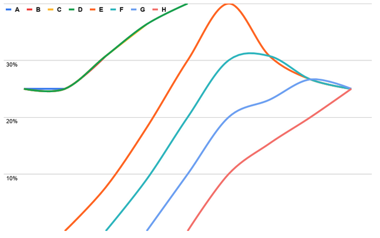

Skipper Filters¶
The parameters can be strings, regex or float64 / int
stringis a string surrounded by double quotes (")regexis a regular expression, surrounded by/, e.g./^www\.example\.org(:\d+)?$/int/float64are usual (decimal) numbers like401or1.23456timeis a string in double quotes, parsable by time.Duration)
Filters are a generic tool and can change HTTP header and body in the request and response path.
Filter can be chained using the arrow operator ->.
Example route with a match all, 2 filters and a backend:
all: * -> filter1 -> filter2 -> "http://127.0.0.1:1234/";
Template placeholders¶
Several filters support template placeholders (${var}) in string parameters.
Template placeholder is replaced by the value that is looked up in the following sources:
- request method (
${request.method}) - request host (
${request.host}) - request url path (
${request.path}) - request url rawquery (
${request.rawQuery}, encoded request URL query without?, e.g.q=foo&r=bar) - request url query (if starts with
request.query.prefix, e.g${request.query.q}is replaced byqquery parameter value) - request headers (if starts with
request.header.prefix, e.g${request.header.Content-Type}is replaced byContent-Typerequest header value) - request cookies (if starts with
request.cookie.prefix, e.g${request.cookie.PHPSESSID}is replaced byPHPSESSIDrequest cookie value) - request IP address
${request.source}- first IP address fromX-Forwarded-Forheader or request remote IP address if header is absent, similar to Source predicate${request.sourceFromLast}- last IP address fromX-Forwarded-Forheader or request remote IP address if header is absent, similar to SourceFromLast predicate${request.clientIP}- request remote IP address similar to ClientIP predicate
- response headers (if starts with
response.header.prefix, e.g${response.header.Location}is replaced byLocationresponse header value) - filter context path parameters (e.g.
${id}is replaced byidpath parameter value)
Missing value interpretation depends on the filter.
Example route that rewrites path using template placeholder:
u1: Path("/user/:id") -> setPath("/v2/user/${id}") -> <loopback>;
Example route that creates header from query parameter:
r: Path("/redirect") && QueryParam("to") -> status(303) -> setResponseHeader("Location", "${request.query.to}") -> <shunt>;
status¶
Sets the response status code to the given value, with no regards to the backend response.
Parameters:
- status code (int)
Example:
route1: Host(/^all401\.example\.org$/) -> status(401) -> <shunt>;
comment¶
No operation, only to comment the route or a group of filters of a route
Parameters:
- msg (string)
Example:
route1: *
-> comment("nothing to see")
-> <shunt>;
annotate¶
Annotate the route, subsequent annotations using the same key will overwrite the value. Other subsequent filters can use annotations to make decisions and should document the key and value they use.
Parameters:
- key (string)
- value (string)
Example:
route1: *
-> annotate("never", "gonna give you up")
-> annotate("never", "gonna let you down")
-> <shunt>;
HTTP Headers¶
preserveHost¶
Sets the incoming Host: header on the outgoing backend connection.
It can be used to override the proxyPreserveHost behavior for individual routes.
Parameters: “true” or “false”
- “true” - use the Host header from the incoming request
- “false” - use the host from the backend address
Example:
route1: * -> preserveHost("true") -> "http://backend.example.org";
Default proxyPreserveHost behavior can be configured by -proxy-preserve-host flag which is false by default.
modRequestHeader¶
Replace all matched regex expressions in the given header.
Parameters:
- header name (string)
- the expression to match (regex)
- the replacement (string)
Example:
enforce_www: * -> modRequestHeader("Host", "^zalando\.(\w+)$", "www.zalando.$1") -> redirectTo(301);
setRequestHeader¶
Set headers for requests.
Header value may contain template placeholders. If a template placeholder can’t be resolved then filter does not set the header.
Parameters:
- header name (string)
- header value (string)
Examples:
foo: * -> setRequestHeader("X-Passed-Skipper", "true") -> "https://backend.example.org";
// Ratelimit per resource
Path("/resource/:id") -> setRequestHeader("X-Resource-Id", "${id}") -> clusterClientRatelimit("resource", 10, "1m", "X-Resource-Id") -> "https://backend.example.org";
appendRequestHeader¶
Same as setRequestHeader, but appends the provided value to the already existing ones.
dropRequestHeader¶
Removes a header from the request
Parameters:
- header name (string)
Example:
foo: * -> dropRequestHeader("User-Agent") -> "https://backend.example.org";
dropRequestHeaderValueRegexp¶
Removes header values matched by regex from the request
Parameters:
- header name (string)
- the expression to match (regex)
Example:
foo: * -> dropRequestHeaderValueRegexp("User-Agent", "^value.") -> "https://backend.example.org";
modResponseHeader¶
Same as modRequestHeader, only for responses
Parameters:
- header name (string)
- the expression to match (regex)
- the replacement (string)
Example:
do_not_avoid_caching: * -> modResponseHeader("cache-control", "no-cache", "cache") -> "https://zalando.de";
setResponseHeader¶
Same as setRequestHeader, only for responses
Example:
set_cookie_with_path_param:
Path("/path/:id") && Method("GET")
-> setResponseHeader("Set-Cookie", "cid=${id}; Max-Age=36000; Secure")
-> redirectTo(302, "/")
-> <shunt>
appendResponseHeader¶
Same as appendRequestHeader, only for responses
dropResponseHeader¶
Same as dropRequestHeader but for responses from the backend
dropResponseHeaderValueRegexp¶
Same as dropRequestHeaderValueRegexp but for responses from the backend
setContextRequestHeader¶
Set headers for requests using values from the filter context (state bag). If the provided key (second parameter) cannot be found in the state bag, then it doesn’t set the header.
Parameters:
- header name (string)
- key in the state bag (string)
The route in the following example checks whether the request is authorized with the oauthTokeninfoAllScope() filter. This filter stores the authenticated user with “auth-user” key in the context, and the setContextRequestHeader() filter in the next step stores it in the header of the outgoing request with the X-Uid name:
foo: * -> oauthTokeninfoAllScope("address_service.all") -> setContextRequestHeader("X-Uid", "auth-user") -> "https://backend.example.org";
appendContextRequestHeader¶
Same as setContextRequestHeader, but appends the provided value to the already existing ones.
setContextResponseHeader¶
Same as setContextRequestHeader, except for responses.
appendContextResponseHeader¶
Same as appendContextRequestHeader, except for responses.
copyRequestHeader¶
Copies value of a given request header to another header.
Parameters:
- source header name (string)
- target header name (string)
Example:
foo: * -> copyRequestHeader("X-Foo", "X-Bar") -> "https://backend.example.org";
copyResponseHeader¶
Same as copyRequestHeader, except for responses.
corsOrigin¶
The filter accepts an optional variadic list of acceptable origin
parameters. If the input argument list is empty, the header will
always be set to * which means any origin is acceptable. Otherwise
the header is only set if the request contains an Origin header and
its value matches one of the elements in the input list. The header is
only set on the response.
Parameters:
- url (variadic string)
Examples:
corsOrigin()
corsOrigin("https://www.example.org")
corsOrigin("https://www.example.org", "http://localhost:9001")
Note
To enable CORS functionality, you must create a dedicated route that handles OPTIONS requests.
Example:
main_route:
PathSubtree("/")
-> corsOrigin()
-> setResponseHeader("Access-Control-Allow-Credentials", "true")
-> setResponseHeader("Access-Control-Allow-Methods", "GET, HEAD, OPTIONS, POST, PUT, PATCH, DELETE")
-> "http://backend.example.org";
preflight_route:
PathSubtree("/") && Method("OPTIONS")
-> corsOrigin()
-> setResponseHeader("Access-Control-Allow-Credentials", "true")
-> setResponseHeader("Access-Control-Allow-Methods", "GET, HEAD, OPTIONS, POST, PUT, PATCH, DELETE")
-> setResponseHeader("Access-Control-Allow-Headers", "authorization, origin, content-type, accept")
-> status(200)
-> <shunt>;
encodeRequestHeader¶
The filter has 2 arguments, the header name and the encoding. If the encoding cannot be changed we set the header value to empty string. Supported encodings are listed in https://pkg.go.dev/golang.org/x/text/encoding/charmap .
Example:
encodeRequestHeader("X-Foo", "Windows1252")
encodeResponseHeader¶
The filter has 2 arguments, the header name and the encoding. If the encoding cannot be changed we set the header value to empty string. Supported encodings are listed in https://pkg.go.dev/golang.org/x/text/encoding/charmap .
Example:
encodeResponseHeader("X-Foo", "Windows1252")
headerToQuery¶
Filter which assigns the value of a given header from the incoming Request to a given query param
Parameters:
- The name of the header to pick from request
- The name of the query param key to add to request
Examples:
headerToQuery("X-Foo-Header", "foo-query-param")
The above filter will set foo-query-param query param respectively to the X-Foo-Header header
and will override the value if the queryparam exists already
flowId¶
Sets an X-Flow-Id header, if it’s not already in the request. This allows you to have a trace in your logs, that traces from the incoming request on the edge to all backend services.
Flow IDs must be in a certain format to be reusable in skipper. Valid formats
depend on the generator used in skipper. Default generator creates IDs of
length 16 matching the following regex: ^[0-9a-zA-Z+-]+$
Parameters:
- no parameter: resets always the X-Flow-Id header to a new value
"reuse": only create X-Flow-Id header if not already set or if the value is invalid in the request
Example:
* -> flowId() -> "https://some-backend.example.org";
* -> flowId("reuse") -> "https://some-backend.example.org";
xforward¶
Standard proxy headers. Appends the client remote IP to the X-Forwarded-For and sets the X-Forwarded-Host header.
xforwardFirst¶
Same as xforward, but instead of appending the last remote IP, it prepends it to comply with the approach of certain LB implementations.
HTTP Path¶
modPath¶
Replace all matched regex expressions in the path.
Parameters:
- the expression to match (regex)
- the replacement (string)
Example:
rm_api: Path("/api") -> modPath("/api", "/") -> "https://backend.example.org";
append_bar: Path("/foo") -> modPath("/foo", "/foo/bar") -> "https://backend.example.org";
new_base: PathSubtree("/base") -> modPath("/base", "/new/base) -> "https://backend.example.org";
rm_api_regex: Path("/api") -> modPath("^/api/(.*)/v2$", "/$1") -> "https://backend.example.org";
setPath¶
Replace the path of the original request to the replacement.
Parameters:
- the replacement (string)
The replacement may contain template placeholders. If a template placeholder can’t be resolved then empty value is used for it.
HTTP Redirect¶
redirectTo¶
Creates an HTTP redirect response.
Parameters:
- redirect status code (int)
- location (string) - optional
Example:
redirect1: PathRegexp(/^\/foo\/bar/) -> redirectTo(302, "/foo/newBar") -> <shunt>;
redirect2: * -> redirectTo(301) -> <shunt>;
- Route redirect1 will do a redirect with status code 302 to https
with new path
/foo/newBarfor requests, that match the path/foo/bar. - Route redirect2 will do a
httpsredirect with status code 301 for all incoming requests that match no other route
see also redirect-handling
redirectToLower¶
Same as redirectTo, but replaces all strings to lowercase.
HTTP Query¶
stripQuery¶
Removes the query parameter from the request URL, and if the first filter
parameter is "true", preserves the query parameter in the form of
x-query-param-<queryParamName>: <queryParamValue> headers, so that ?foo=bar
becomes x-query-param-foo: bar
Example:
* -> stripQuery() -> "http://backend.example.org";
* -> stripQuery("true") -> "http://backend.example.org";
setQuery¶
Set the query string ?k=v in the request to the backend to a given value.
Parameters:
- key (string)
- value (string)
Key and value may contain template placeholders. If a template placeholder can’t be resolved then empty value is used for it.
Example:
setQuery("k", "v")
dropQuery¶
Delete the query string ?k=v in the request to the backend for a
given key.
Parameters:
- key (string)
Key may contain template placeholders. If a template placeholder can’t be resolved then empty value is used for it.
Example:
dropQuery("k")
queryToHeader¶
Filter which assigns the value of a given query param from the incoming Request to a given Header with optional format string value.
Parameters:
- The name of the query param key to pick from request
- The name of the header to add to request
- The format string used to create the header value, which gets the value from the query value as before
Examples:
queryToHeader("foo-query-param", "X-Foo-Header")
queryToHeader("access_token", "Authorization", "Bearer %s")
The first filter will set X-Foo-Header header respectively to the foo-query-param query param
and will not override the value if the header exists already.
The second filter will set Authorization header to the
access_token query param with a prefix value Bearer and will
not override the value if the header exists already.
TLS¶
Filters that provide access to TLS data of a request.
tlsPassClientCertificates¶
This filter copies TLS client certificates encoded as pem into the
X-Forwarded-Tls-Client-Cert header. Multiple certificates are
separated by ,.
Example:
* -> tlsPassClientCertificates() -> "http://10.2.5.21:8080";
Diagnostics¶
These filters are meant for diagnostic or load testing purposes.
randomContent¶
Generate response with random text of specified length.
Parameters:
- length of data (int)
Example:
* -> randomContent(42) -> <shunt>;
repeatContent¶
Generate response of specified size from repeated text.
Parameters:
- text to repeat (string)
- size of response in bytes (int)
Example:
* -> repeatContent("I will not waste chalk. ", 1000) -> <shunt>;
repeatContentHex¶
Generate response of specified size from repeated bytes.
Parameters:
- bytes to repeat (hexadecimal string)
- size of response in bytes (int)
Example:
* -> repeatContentHex("00", 100) -> <shunt>
// Create binary response using size equal to the number of bytes to repeat, i.e. repeat once
* -> repeatContentHex("68657861646563696d616c", 11) -> <shunt>
wrapContent¶
Add prefix and suffix to the response.
Parameters:
- prefix (string)
- suffix (string)
Examples:
* -> wrapContent("foo", "baz") -> inlineContent("bar") -> <shunt>
// JSON array of 100 zeros
* -> wrapContent("[", "0]") -> repeatContent("0, ", 297) -> <shunt>
wrapContentHex¶
Add prefix and suffix to the response.
Parameters:
- prefix (hexadecimal string)
- suffix (hexadecimal string)
Examples:
* -> wrapContentHex("68657861", "6d616c") -> inlineContent("deci") -> <shunt>
// 1G of gzip-compressed text
*
-> setResponseHeader("Content-Encoding", "gzip")
-> wrapContentHex(
"1f8b08000000000004ffecd6b10d00200804c05598c5b80a852d0ee422762ce61c2657d212f8bf9915bb6f9f8c51b9c26c1feec13fc80379a80ff4210ff0000ff0000ff0000ff0000ff0000ff0000ff0000ff0000ff0000ff0000ff0000ffce781070000ffffecd6810c000000c0207feb737c8ba2f8cd6f7ef39bdffce637bf",
"7dc0077cc0077cc0077cc0077cc0077cc0077cc0077cc0077cc0077cc0077cc0077ce0ff81000000ffffecd6810000000080207feb418ea278ce739ef39ce73ce739cf7de0f581000000ffff010000ffff5216994600ca9a3b"
)
-> repeatContentHex("7dc0077cc0077cc0077cc0077cc0077cc0077cc0077cc0077cc0077cc0077cc0077ce0ff81000000ffffecd6810c000000c0207feb737c8ba278ce739ef39ce73ce739cf", 8300624)
-> <shunt>
You may use https://github.com/AlexanderYastrebov/unrepeat to decompose binary file into prefix, repeating content and suffix.
latency¶
Enable adding artificial latency
Parameters:
- latency in milliseconds (int) or in
timeas a string in double quotes, parsable by time.Duration)
Example:
* -> latency(120) -> "https://www.example.org";
* -> latency("120ms") -> "https://www.example.org";
bandwidth¶
Enable bandwidth throttling.
Parameters:
- bandwidth in kb/s (int)
Example:
* -> bandwidth(30) -> "https://www.example.org";
chunks¶
Enables adding chunking responses with custom chunk size with artificial delays in between response chunks. To disable delays, set the second parameter to “0”.
Parameters:
- byte length (int)
- time duration (time.Duration)
Example:
* -> chunks(1024, "120ms") -> "https://www.example.org";
* -> chunks(1024, "0") -> "https://www.example.org";
backendLatency¶
Same as latency filter, but on the request path and not on the response path.
backendBandwidth¶
Same as bandwidth filter, but on the request path and not on the response path.
backendChunks¶
Same as chunks filter, but on the request path and not on the response path.
tarpit¶
The tarpit filter discards the request and respond with a never ending stream of chunked response payloads. The goal is to consume the client connection without letting the client know what is happening.
Parameters:
- time duration (time.Duration)
Example:
* -> tarpit("1s") -> <shunt>;
The example will send every second a chunk of response payload.
absorb¶
The absorb filter reads and discards the payload of the incoming requests. It logs with INFO level and a unique ID per request:
- the event of receiving the request
- partial and final events for consuming request payload and total consumed byte count
- the finishing event of the request
- any read errors other than EOF
absorbSilent¶
The absorbSilent filter reads and discards the payload of the incoming requests. It only logs read errors other than EOF.
uniformRequestLatency¶
The uniformRequestLatency filter introduces uniformly distributed
jitter latency within [mean-delta, mean+delta] interval for
requests. The first parameter is the mean and the second is delta. In
the example we would sleep for 100ms+/-10ms.
Example:
* -> uniformRequestLatency("100ms", "10ms") -> "https://www.example.org";
normalRequestLatency¶
The normalRequestLatency filter introduces normally distributed jitter latency with configured mean value for requests. The first parameter is µ (mean) and the second is σ as in https://en.wikipedia.org/wiki/Normal_distribution.
Example:
* -> normalRequestLatency("10ms", "5ms") -> "https://www.example.org";
histogramRequestLatency¶
The histogramRequestLatency adds latency to requests according to the histogram distribution. It expects a list of interleaved duration strings and numbers that defines a histogram. Duration strings define boundaries of consecutive buckets and numbers define bucket weights. The filter randomly selects a bucket with probability equal to its weight divided by the sum of all bucket weights (which must be non-zero) and then sleeps for a random duration in between bucket boundaries.
Example:
r: * -> histogramRequestLatency("0ms", 50, "5ms", 0, "10ms", 30, "15ms", 20, "20ms") -> "https://www.example.org";
The example above adds a latency * between 0ms and 5ms to 50% of the requests * between 5ms and 10ms to 0% of the requests * between 10ms and 15ms to 30% of the requests * and between 15ms and 20ms to 20% of the requests.
uniformResponseLatency¶
The uniformResponseLatency filter introduces uniformly distributed
jitter latency within [mean-delta, mean+delta] interval for
responses. The first parameter is the mean and the second is delta. In
the example we would sleep for 100ms+/-10ms.
Example:
* -> uniformRequestLatency("100ms", "10ms") -> "https://www.example.org";
normalResponseLatency¶
The normalResponseLatency filter introduces normally distributed jitter latency with configured mean value for responses. The first parameter is µ (mean) and the second is σ as in https://en.wikipedia.org/wiki/Normal_distribution.
Example:
* -> normalRequestLatency("10ms", "5ms") -> "https://www.example.org";
histogramResponseLatency¶
The histogramResponseLatency adds latency to responses according to the histogram distribution, similar to histogramRequestLatency.
logHeader¶
The logHeader filter prints the request line and the header, but not the body, to
stderr. Note that this filter should be used only in diagnostics setup and with care,
since the request headers may contain sensitive data, and they also can explode the
amount of logs. Authorization headers will be truncated in request and
response header logs. You can log request or response headers, which
defaults for backwards compatibility to request headers.
Parameters:
- no arg, similar to: “request”
- “request” or “response” (string varargs)
Example:
* -> logHeader() -> "https://www.example.org";
* -> logHeader("request") -> "https://www.example.org";
* -> logHeader("response") -> "https://www.example.org";
* -> logHeader("request", "response") -> "https://www.example.org";
logBody¶
The logBody filter logs the request or response body in chunks while
streaming. Chunks start with logBody("request") $flowid: or
logBody("response") $flowid:, such that you can find all chunks
belonging to a given flow. See also flowId() filter.
Note that this filter should be used only in diagnostics setup and with care, since the request and response body may contain sensitive data. Logs can also explode in the amount of bytes, so you have to choose a limit. You can log request or response bodies. This filter has close to no overhead other than the I/O created by the logger.
Parameters:
- type: “request” or “response” (string)
- limit: maximum number of bytes to log (int)
Example:
* -> logBody("request", 1024) -> "https://www.example.org";
* -> logBody("response", 1024) -> "https://www.example.org";
* -> logBody("request", 1024) -> logBody("response", 1024) -> "https://www.example.org";
Timeout¶
backendTimeout¶
Configure backend timeout. Skipper responds with 504 Gateway Timeout status if obtaining a connection,
sending the request, and reading the backend response headers and body takes longer than the configured timeout.
However, if response streaming has already started it will be terminated, i.e. client will receive backend response
status and truncated response body.
Parameters:
- timeout (duration string)
Example:
* -> backendTimeout("10ms") -> "https://www.example.org";
readTimeout¶
Configure read timeout will set a read deadline on the server socket connected to the client connecting to the proxy. Skipper will log 499 client timeout with context canceled. We are not able to differentiate between client hang up and read timeout.
Parameters:
- timeout (duration string)
Example:
* -> readTimeout("10ms") -> "https://www.example.org";
writeTimeout¶
Configure write timeout will set a write deadline on the server socket
connected to the client connecting to the proxy. Skipper will show
access logs as if the response was served as expected, but the client can
show an error. You can observe an increase in streaming errors via
metrics or a in opentracing proxy span you can see Tag
streamBody.byte with value streamBody error or in debug logs
something like
error while copying the response stream: write tcp 127.0.0.1:9090->127.0.0.1:38574: i/o timeout.
Parameters:
- timeout (duration string)
Example:
* -> writeTimeout("10ms") -> "https://www.example.org";
Fallback¶
loopbackIfStatus¶
Fallbacks to the given path if the response has the specified code. The filter replaces the response coming from the backend or the previous filters.
Parameters:
- status code (int)
- path (string)
Example:
loopback_404: Path("/loopback-404") -> inlineContent("The page you are looking for is not available!") -> <shunt>
r: Path("/page/:id") -> loopbackIfStatus(404, "/loopback-404") -> "https://www.example.org"
Shadow Traffic¶
tee¶
Provides a unix-like tee feature for routing.
Using this filter, the request will be sent to a “shadow” backend in addition to the main backend of the route.
Example:
* -> tee("https://audit-logging.example.org") -> "https://foo.example.org";
This will send an identical request for foo.example.org to audit-logging.example.org. Another use case could be using it for benchmarking a new backend with some real traffic. This we call “shadow traffic”.
The above route will forward the request to https://foo.example.org as it
normally would do, but in addition to that, it will send an identical request to
https://audit-logging.example.org. The request sent to
https://audit-logging.example.org will receive the same method and headers,
and a copy of the body stream. The tee response is ignored for this shadow backend.
It is possible to change the path of the tee request, in a similar way to the modPath filter:
Path("/api/v1") -> tee("https://api.example.org", "^/v1", "/v2" ) -> "http://api.example.org";
In the above example, one can test how a new version of an API would behave on incoming requests.
teenf¶
The same as tee filter, but does not follow redirects from the backend.
teeLoopback¶
This filter provides a unix-like tee feature for routing, but unlike the tee, this filter feeds the copied request to the start of the routing, including the route lookup and executing the filters on the matched route.
It is recommended to use this solution instead of the tee filter, because the same routing facilities are used for the outgoing tee requests as for the normal requests, and all the filters and backend types are supported.
To ensure that the right route, or one of the right set of routes, is matched after the loopback, use the filter together with the Tee predicate, however, this is not mandatory if the request is changed via other filters, such that other predicates ensure matching the right route. To avoid infinite looping, the number of requests spawn from a single incoming request is limited similarly as in case of the loopback backend.
Parameters:
- tee group (string): a label identifying which routes should match the loopback request, marked with the Tee predicate
Example, generate shadow traffic from 10% of the production traffic:
main: * -> "https://main-backend.example.org";
split: Traffic(.1) -> teeLoopback("test-A") -> "https://main-backend.example.org";
shadow: Tee("test-A") && True() -> "https://test-backend.example.org";
See also:
teeResponse¶
The teeResponse filter provides the possibility to send the HTTP body of the response to some other HTTP endpoint as request body.
r: * -> teeResponse("https://another-api.example.org") -> "http://api.example.org";
HTTP Body¶
compress¶
The filter, when executed on the response path, checks if the response entity can be compressed. To decide, it checks the Content-Encoding, the Cache-Control and the Content-Type headers. It doesn’t compress the content if the Content-Encoding is set to other than identity, or the Cache-Control applies the no-transform pragma, or the Content-Type is set to an unsupported value.
The default supported content types are: text/plain, text/html, application/json,
application/javascript, application/x-javascript, text/javascript, text/css,
image/svg+xml, application/octet-stream.
The default set of MIME types can be reset or extended by passing in the desired
types as filter arguments. When extending the defaults, the first argument needs to
be "...". E.g. to compress tiff in addition to the defaults:
* -> compress("...", "image/tiff") -> "https://www.example.org"
To reset the supported types, e.g. to compress only HTML, the “…” argument needs to be omitted:
* -> compress("text/html") -> "https://www.example.org"
It is possible to control the compression level, by setting it as the first filter argument, in front of the MIME types. The default compression level is best-speed. The possible values are integers between 0 and 9 (inclusive), where 0 means no-compression, 1 means best-speed and 11 means best-compression. Example:
* -> compress(11, "image/tiff") -> "https://www.example.org"
The filter also checks the incoming request, if it accepts the supported encodings,
explicitly stated in the Accept-Encoding header.
The filter currently supports by default gzip, deflate and br (can be overridden with flag compress-encodings).
It does not assume that the client accepts any encoding if the
Accept-Encoding header is not set. It ignores * in the Accept-Encoding header.
Supported encodings are prioritized on:
- quality value provided by client
- compress-encodings flag following order as provided if quality value is equal
- gzip, deflate, br in this order otherwise
When compressing the response, it updates the response header. It deletes the
Content-Length value triggering the proxy to always return the response with chunked
transfer encoding, sets the Content-Encoding to the selected encoding and sets the
Vary: Accept-Encoding header, if missing.
The compression happens in a streaming way, using only a small internal buffer.
decompress¶
The filter, when executed on the response path, checks if the response entity is
compressed by a supported algorithm (gzip, deflate, br). To decide, it checks the Content-Encoding
header.
When compressing the response, it updates the response header. It deletes the
Content-Length value triggering the proxy to always return the response with chunked
transfer encoding, deletes the Content-Encoding and the Vary headers, if set.
The decompression happens in a streaming way, using only a small internal buffer.
Example:
* -> decompress() -> "https://www.example.org"
static¶
Serves static content from the filesystem.
Parameters:
- Request path to strip (string)
- Target base path in the filesystem (string)
Example:
This serves files from /srv/www/dehydrated when requested via /.well-known/acme-challenge/,
e.g. the request GET /.well-known/acme-challenge/foo will serve the file /srv/www/dehydrated/foo.
acme: Host(/./) && Method("GET") && Path("/.well-known/acme-challenge/*")
-> static("/.well-known/acme-challenge/", "/srv/www/dehydrated") -> <shunt>;
Notes:
- redirects to the directory when a file
index.htmlexists and it is requested, i.e.GET /foo/index.htmlredirects to/foo/which serves then the/foo/index.html - serves the content of the
index.htmlwhen a directory is requested - does a simple directory listing of files / directories when no
index.htmlis present
inlineContent¶
Returns arbitrary content in the HTTP body.
Parameters:
- content (string)
- content type (string) - optional
Example:
* -> inlineContent("<h1>Hello</h1>") -> <shunt>
* -> inlineContent("[1,2,3]", "application/json") -> <shunt>
* -> status(418) -> inlineContent("Would you like a cup of tea?") -> <shunt>
Content type will be automatically detected when not provided using https://mimesniff.spec.whatwg.org/#rules-for-identifying-an-unknown-mime-type algorithm. Note that content detection algorithm does not contain any rules for recognizing JSON.
Note
inlineContent filter sets the response on request path and starts the response path immediately.
The rest of the filter chain and backend are ignored and therefore inlineContent filter must be the last in the chain.
inlineContentIfStatus¶
Returns arbitrary content in the HTTP body, if the response has the specified status code.
Parameters:
- status code (int)
- content (string)
- content type (string) - optional
Example:
* -> inlineContentIfStatus(404, "<p class=\"problem\">We don't have what you're looking for.</p>") -> "https://www.example.org"
* -> inlineContentIfStatus(401, "{\"error\": \"unauthorized\"}", "application/json") -> "https://www.example.org"
The content type will be automatically detected when not provided.
blockContent¶
Block a request based on it’s body content.
The filter max buffer size is 2MiB by default and can be overridden with -max-matcher-buffer-size=<int>.
Parameters:
- toblockList (List of strings)
Example:
* -> blockContent("Malicious Content") -> "http://example.com";
blockContentHex¶
Block a request based on it’s body content.
The filter max buffer size is 2MiB by default and can be overridden with -max-matcher-buffer-size=<int>.
Parameters:
- toblockList (List of hex string)
Example:
* -> blockContentHex(`000a`) -> "http://example.com";
* -> blockContentHex("deadbeef", "000a") -> "http://example.com";
sed¶
The filter sed replaces all occurrences of a pattern with a replacement string in the response body.
Example:
editorRoute: * -> sed("foo", "bar") -> "https://www.example.org";
Example with larger max buffer:
editorRoute: * -> sed("foo", "bar", 64000000) -> "https://www.example.org";
This filter expects a regexp pattern and a replacement string as arguments. During the streaming of the response body, every occurrence of the pattern will be replaced with the replacement string. The editing doesn’t happen right when the filter is executed, only later when the streaming normally happens, after all response filters were called.
The sed() filter accepts two optional arguments, the max editor buffer size in bytes, and max buffer handling flag. The max buffer size, when set, defines how much data can be buffered at a given time by the editor. The default value is 2MiB. The max buffer handling flag can take one of two values: “abort” or “best-effort” (default). Setting “abort” means that the stream will be aborted when reached the limit. Setting “best-effort”, will run the replacement on the available content, in case of certain patterns, this may result in content that is different from one that would have been edited in a single piece. See more details below.
The filter uses the go regular expression implementation: https://github.com/google/re2/wiki/Syntax . Due to the streaming nature, matches with zero length are ignored.
Memory handling and limitations¶
In order to avoid unbound buffering of unprocessed data, the sed* filters need to
apply some limitations. Some patterns, e.g. .* would allow to match the complete
payload, and it could result in trying to buffer it all and potentially causing
running out of available memory. Similarly, in case of certain expressions, when
they don’t match, it’s impossible to tell if they would match without reading more
data from the source, and so would potentially need to buffer the entire payload.
To prevent too high memory usage, the max buffer size is limited in case of each
variant of the filter, by default to 2MiB, which is the same limit as the one we
apply when reading the request headers by default. When the limit is reached, and
the buffered content matches the pattern, then it is processed by replacing it,
when it doesn’t match the pattern, then it is forwarded unchanged. This way, e.g.
sed(".*", "") can be used safely to consume and discard the payload.
As a result of this, with large payloads, it is possible that the resulting content will be different than if we had run the replacement on the entire content at once. If we have enough preliminary knowledge about the payload, then it may be better to use the delimited variant of the filters, e.g. for line based editing.
If the max buffer handling is set to “abort”, then the stream editing is stopped and the rest of the payload is dropped.
sedDelim¶
Like sed(), but it expects an additional argument, before the optional max buffer size argument, that is used to delimit chunks to be processed at once. The pattern replacement is executed only within the boundaries of the chunks defined by the delimiter, and matches across the chunk boundaries are not considered.
Example:
editorRoute: * -> sedDelim("foo", "bar", "\n") -> "https://www.example.org";
sedRequest¶
Like sed(), but for the request content.
Example:
editorRoute: * -> sedRequest("foo", "bar") -> "https://www.example.org";
sedRequestDelim¶
Like sedDelim(), but for the request content.
Example:
editorRoute: * -> sedRequestDelim("foo", "bar", "\n") -> "https://www.example.org";
Authentication and Authorization¶
basicAuth¶
Enable Basic Authentication
The filter accepts two parameters, the first mandatory one is the path to the htpasswd file usually used with Apache or nginx. The second one is the optional realm name that will be displayed in the browser. MD5, SHA1 and BCrypt are supported for Basic authentication password storage, see also the http-auth module page.
Examples:
basicAuth("/path/to/htpasswd")
basicAuth("/path/to/htpasswd", "My Website")
webhook¶
The webhook filter makes it possible to have your own authentication and
authorization endpoint as a filter.
Headers from the incoming request will be copied into the request that is being done to the webhook endpoint. It is possible to copy headers from the webhook response into the continuing request by specifying the headers to copy as an optional second argument to the filter.
Responses from the webhook will be treated as follows:
- Authorized if the status code is less than 300
- Forbidden if the status code is 403
- Unauthorized for remaining status codes
Examples:
webhook("https://custom-webhook.example.org/auth")
webhook("https://custom-webhook.example.org/auth", "X-Copy-Webhook-Header,X-Copy-Another-Header")
The webhook timeout has a default of 2 seconds and can be globally
changed, if skipper is started with -webhook-timeout=2s flag.
Tokeninfo¶
Tokeninfo handled by another service. The filters just validate the response from the tokeninfo service to do authorization as defined in the filter.
oauthTokeninfoAnyScope¶
If skipper is started with -oauth2-tokeninfo-url flag, you can use
this filter.
The filter accepts variable number of string arguments, which are used to
validate the incoming token from the Authorization: Bearer <token>
header. There are two rejection scenarios for this filter. If the token
is not successfully validated by the oauth server, then a 401 Unauthorized
response will be returned. However, if the token is successfully validated
but the required scope match isn’t satisfied, then a 403 Forbidden response
will be returned. If any of the configured scopes from the filter is found
inside the tokeninfo result for the incoming token, it will allow the
request to pass.
Examples:
oauthTokeninfoAnyScope("s1", "s2", "s3")
oauthTokeninfoAllScope¶
If skipper is started with -oauth2-tokeninfo-url flag, you can use
this filter.
The filter accepts variable number of string arguments, which are used to
validate the incoming token from the Authorization: Bearer <token>
header. There are two rejection scenarios for this filter. If the token
is not successfully validated by the oauth server, then a 401 Unauthorized
response will be returned. However, if the token is successfully validated
but the required scope match isn’t satisfied, then a 403 Forbidden response
will be returned. If all of the configured scopes from the filter are found
inside the tokeninfo result for the incoming token, it will allow the
request to pass.
Examples:
oauthTokeninfoAllScope("s1", "s2", "s3")
oauthTokeninfoAnyKV¶
If skipper is started with -oauth2-tokeninfo-url flag, you can use
this filter.
The filter accepts an even number of variable arguments of type
string, which are used to validate the incoming token from the
Authorization: Bearer <token> header. There are two rejection scenarios
for this filter. If the token is not successfully validated by the oauth
server, then a 401 Unauthorized response will be returned. However,
if the token is successfully validated but the required scope match
isn’t satisfied, then a 403 Forbidden response will be returned.
If any of the configured key value pairs from the filter is found
inside the tokeninfo result for the incoming token, it will allow
the request to pass.
Examples:
oauthTokeninfoAnyKV("k1", "v1", "k2", "v2")
oauthTokeninfoAnyKV("k1", "v1", "k1", "v2")
oauthTokeninfoAllKV¶
If skipper is started with -oauth2-tokeninfo-url flag, you can use
this filter.
The filter accepts an even number of variable arguments of type
string, which are used to validate the incoming token from the
Authorization: Bearer <token> header. There are two rejection
scenarios for this filter. If the token is not successfully validated
by the oauth server, then a 401 Unauthorized response will be
returned. However, if the token is successfully validated but
the required scope match isn’t satisfied, then a 403 Forbidden response
will be returned. If all of the configured key value pairs from
the filter are found inside the tokeninfo result for the incoming
token, it will allow the request to pass.
Examples:
oauthTokeninfoAllKV("k1", "v1", "k2", "v2")
oauthTokeninfoValidate¶
This filter is experimental and may change in the future, please see tests for example usage.
The filter obtains token info and allows request if there was no error
otherwise it responds with 401 Unauthorized status and configured response body.
It does nothing if any preceding filter already validated the token or if route is annotated with configured annotations.
It is useful as a default filter to ensure each request has a valid token. jwtMetrics filter may be used to discover routes serving requests without a valid token.
The filter requires single string argument that is parsed as YAML. For convenience use flow style format.
Examples:
// without opt-out annotation validates the token
oauthTokeninfoValidate("{optOutAnnotations: [oauth.disabled], unauthorizedResponse: 'Authentication required, see https://auth.test/foo'}")
// with opt-out annotation does not validate the token
annotate("oauth.disabled", "this endpoint is public") ->
oauthTokeninfoValidate("{optOutAnnotations: [oauth.disabled], unauthorizedResponse: 'Authentication required, see https://auth.test/foo'}")
// does not validate the token when request host matches one of the patterns:
oauthTokeninfoValidate("{optOutAnnotations: [oauth.disabled], optOutHosts: ['^.+[.]domain[.]test$', '^exact.test$'], unauthorizedResponse: 'Authentication required, see https://auth.test/foo'}")
Tokenintrospection¶
Tokenintrospection handled by another service. The filters just validate the response from the tokenintrospection service to do authorization as defined in the filter.
oauthTokenintrospectionAnyClaims¶
The filter accepts variable number of string arguments, which are used
to validate the incoming token from the Authorization: Bearer
<token> header. The first argument to the filter is the issuer URL,
for example https://accounts.google.com, that will be used as
described in RFC Draft
to find the configuration and for example supported claims.
If one of the configured and supported claims from the filter are found inside the tokenintrospection (RFC7662) result for the incoming token, it will allow the request to pass.
Examples:
oauthTokenintrospectionAnyClaims("https://accounts.google.com", "c1", "c2", "c3")
oauthTokenintrospectionAllClaims¶
The filter accepts variable number of string arguments, which are used
to validate the incoming token from the Authorization: Bearer
<token> header. The first argument to the filter is the issuer URL,
for example https://accounts.google.com, that will be used as
described in RFC Draft
to find the configuration and for example supported claims.
If all of the configured and supported claims from the filter are found inside the tokenintrospection (RFC7662) result for the incoming token, it will allow the request to pass.
Examples:
oauthTokenintrospectionAllClaims("https://accounts.google.com", "c1", "c2", "c3")
oauthTokenintrospectionAnyKV¶
The filter accepts an even number of variable arguments of type
string, which are used to validate the incoming token from the
Authorization: Bearer <token> header. The first argument to the
filter is the issuer URL, for example https://accounts.google.com,
that will be used as described in
RFC Draft
to find the configuration and for example supported claims.
If one of the configured key value pairs from the filter are found inside the tokenintrospection (RFC7662) result for the incoming token, it will allow the request to pass.
Examples:
oauthTokenintrospectionAnyKV("https://accounts.google.com", "k1", "v1", "k2", "v2")
oauthTokenintrospectionAnyKV("https://accounts.google.com", "k1", "v1", "k1", "v2")
oauthTokenintrospectionAllKV¶
The filter accepts an even number of variable arguments of type
string, which are used to validate the incoming token from the
Authorization: Bearer <token> header. The first argument to the
filter is the issuer URL, for example https://accounts.google.com,
that will be used as described in
RFC Draft
to find the configuration and for example supported claims.
If all of the configured key value pairs from the filter are found inside the tokenintrospection (RFC7662) result for the incoming token, it will allow the request to pass.
Examples:
oauthTokenintrospectionAllKV("https://accounts.google.com", "k1", "v1", "k2", "v2")
secureOauthTokenintrospectionAnyClaims¶
The filter accepts variable number of string arguments, which are used
to validate the incoming token from the Authorization: Bearer
<token> header. The first argument to the filter is the issuer URL,
for example https://accounts.google.com, that will be used as
described in RFC Draft
to find the configuration and for example supported claims.
Second and third arguments are the client-id and client-secret. Use this filter if the Token Introspection endpoint requires authorization to validate and decode the incoming token. The filter will optionally read client-id and client-secret from environment variables: OAUTH_CLIENT_ID, OAUTH_CLIENT_SECRET
If one of the configured and supported claims from the filter are found inside the tokenintrospection (RFC7662) result for the incoming token, it will allow the request to pass.
Examples:
secureOauthTokenintrospectionAnyClaims("issuerURL", "client-id", "client-secret", "claim1", "claim2")
Read client-id and client-secret from environment variables
secureOauthTokenintrospectionAnyClaims("issuerURL", "", "", "claim1", "claim2")
secureOauthTokenintrospectionAllClaims¶
The filter accepts variable number of string arguments, which are used
to validate the incoming token from the Authorization: Bearer
<token> header. The first argument to the filter is the issuer URL,
for example https://accounts.google.com, that will be used as
described in RFC Draft
to find the configuration and for example supported claims.
Second and third arguments are the client-id and client-secret. Use this filter if the Token Introspection endpoint requires authorization to validate and decode the incoming token. The filter will optionally read client-id and client-secret from environment variables: OAUTH_CLIENT_ID, OAUTH_CLIENT_SECRET
If all of the configured and supported claims from the filter are found inside the tokenintrospection (RFC7662) result for the incoming token, it will allow the request to pass.
Examples:
secureOauthTokenintrospectionAllClaims("issuerURL", "client-id", "client-secret", "claim1", "claim2")
Read client-id and client-secret from environment variables
secureOauthTokenintrospectionAllClaims("issuerURL", "", "", "claim1", "claim2")
secureOauthTokenintrospectionAnyKV¶
The filter accepts an even number of variable arguments of type
string, which are used to validate the incoming token from the
Authorization: Bearer <token> header. The first argument to the
filter is the issuer URL, for example https://accounts.google.com,
that will be used as described in
RFC Draft
to find the configuration and for example supported claims.
Second and third arguments are the client-id and client-secret. Use this filter if the Token Introspection endpoint requires authorization to validate and decode the incoming token. The filter will optionally read client-id and client-secret from environment variables: OAUTH_CLIENT_ID, OAUTH_CLIENT_SECRET
If one of the configured key value pairs from the filter are found inside the tokenintrospection (RFC7662) result for the incoming token, it will allow the request to pass.
Examples:
secureOauthTokenintrospectionAnyKV("issuerURL", "client-id", "client-secret", "k1", "v1", "k2", "v2")
Read client-id and client-secret from environment variables
secureOauthTokenintrospectionAnyKV("issuerURL", "", "", "k1", "v1", "k2", "v2")
secureOauthTokenintrospectionAllKV¶
The filter accepts an even number of variable arguments of type
string, which are used to validate the incoming token from the
Authorization: Bearer <token> header. The first argument to the
filter is the issuer URL, for example https://accounts.google.com,
that will be used as described in
RFC Draft
to find the configuration and for example supported claims.
Second and third arguments are the client-id and client-secret. Use this filter if the Token Introspection endpoint requires authorization to validate and decode the incoming token. The filter will optionally read client-id and client-secret from environment variables: OAUTH_CLIENT_ID, OAUTH_CLIENT_SECRET
If all of the configured key value pairs from the filter are found inside the tokenintrospection (RFC7662) result for the incoming token, it will allow the request to pass.
Examples:
secureOauthTokenintrospectionAllKV("issuerURL", "client-id", "client-secret", "k1", "v1", "k2", "v2")
Read client-id and client-secret from environment variables
secureOauthTokenintrospectionAllKV("issuerURL", "", "", "k1", "v1", "k2", "v2")
JWT¶
jwtValidation¶
The filter parses bearer jwt token from Authorization header and validates the signature using public keys discovered via /.well-known/openid-configuration endpoint. Takes issuer url as single parameter. The filter stores token claims into the state bag where they can be used by oidcClaimsQuery, forwardToken or forwardTokenField filters.
Examples:
jwtValidation("https://login.microsoftonline.com/{tenantId}/v2.0")
jwtMetrics¶
This filter is experimental and may change in the future, please see tests for example usage.
The filter parses (but does not validate) JWT token from Authorization request header on response path
and increments the following counters:
missing-token: request does not haveAuthorizationheaderinvalid-token-type:Authorizationheader value is not aBearertypeinvalid-token:Authorizationheader does not contain a JWT tokenmissing-issuer: DEPRECATED JWT token does not haveissclaiminvalid-issuer: DEPRECATED JWT token does not have any of the configured issuersinvalid-claims: JWT token does not have any of the configured claims
Each counter name uses concatenation of request method, escaped hostname and response status as a prefix, e.g.:
jwtMetrics.custom.GET.example_org.200.invalid-token
and therefore requires approximately count(HTTP methods) * count(Hosts) * count(Statuses) * 8 bytes of additional memory.
The filter does nothing if response status is 4xx or route is opt-out via annotation, state bag value or request host pattern.
The filter requires single string argument that is parsed as YAML. For convenience use flow style format.
Examples:
jwtMetrics("{issuers: ['https://example.com', 'https://example.org']}")
jwtMetrics("{claims: [{'iss': 'https://example.com', 'realm': 'emp'}, {'iss': 'https://example.org', 'realm': 'org'}]}")
// opt-out by annotation
annotate("oauth.disabled", "this endpoint is public") ->
jwtMetrics("{issuers: ['https://example.com', 'https://example.org'], optOutAnnotations: [oauth.disabled]}")
// opt-out by annotation with claims
annotate("oauth.disabled", "this endpoint is public") ->
jwtMetrics("{claims: [{'iss': 'https://example.com', 'realm': 'emp'}], optOutAnnotations: [oauth.disabled]}")
// opt-out by state bag:
// oauthTokeninfo* and oauthGrant filters store token info in the state bag using "tokeninfo" key.
oauthTokeninfoAnyKV("foo", "bar") ->
jwtMetrics("{issuers: ['https://example.com', 'https://example.org'], optOutStateBag: [tokeninfo]}")
// opt-out by matching request host pattern:
jwtMetrics("{issuers: ['https://example.com', 'https://example.org'], optOutHosts: ['^.+[.]domain[.]test$', '^exact.test$']}")
Forward Token Data¶
forwardToken¶
The filter takes the header name as its first argument and sets header value to the token info or token introspection result serialized as a JSON object. To include only particular fields provide their names as additional arguments.
If this filter is used when there is no token introspection or token info data then it does not have any effect.
Examples:
forwardToken("X-Tokeninfo-Forward")
forwardToken("X-Tokeninfo-Forward", "access_token", "token_type")
forwardTokenField¶
The filter takes a header name and a field as its first and second arguments. The corresponding field from the result of token info, token introspection or oidc user info is added as corresponding header when the request is passed to the backend.
If this filter is used when there is no token introspection, token info or oidc user info data then it does not have any effect.
To forward multiple fields filters can be sequenced
Examples:
forwardTokenField("X-Tokeninfo-Forward-Oid", "oid") -> forwardTokenField("X-Tokeninfo-Forward-Sub", "sub")
OAuth2¶
oauthGrant¶
Enables authentication and authorization with an OAuth2 authorization code grant flow as specified by RFC 6749 Section 1.3.1. Automatically redirects unauthenticated users to log in at their provider’s authorization endpoint. Supports token refreshing and stores access and refresh tokens in an encrypted cookie. Supports credential rotation for the OAuth2 client ID and secret.
The filter consumes and drops the grant token request cookie to prevent it from leaking to untrusted downstream services.
The filter will inject the OAuth2 bearer token into the request headers if the flag
oauth2-access-token-header-name is set.
The filter must be used in conjunction with the grantCallback filter
where the OAuth2 provider can redirect authenticated users with an authorization code.
Skipper will make sure to add the grantCallback filter for you to your routes when
you pass the -enable-oauth2-grant-flow flag.
The filter may be used with the grantClaimsQuery filter to perform authz and access control.
The filter also supports javascript login redirect stub that can be used e.g. to store location hash.
To enable the stub, add preceding annotate filter with oauthGrant.loginRedirectStub key and
content that will be served to the client with 200 OK status instead of 307 Temporary Redirect to the authorization URL.
The filter will replace {authCodeURL} (and {{authCodeURL}}) placeholders in the content with the actual authorization URL
and add X-Auth-Code-Url response header with the same value.
See the tutorial for step-by-step instructions.
Examples:
all:
*
-> oauthGrant()
-> "http://localhost:9090";
single_page_app:
*
-> annotate("oauthGrant.loginRedirectStub", `
<!doctype html>
<html lang="en">
<head>
<title>Redirecting...</title>
<script>
if (window.location.hash !== null) {
localStorage.setItem('original-location-hash', window.location.hash);
}
window.location.replace('{authCodeURL}');
</script>
</head>
</html>
`)
-> oauthGrant()
-> "http://localhost:9090";
Skipper arguments:
| Argument | Required? | Description |
|---|---|---|
-enable-oauth2-grant-flow |
yes | toggle flag to enable the oauthGrant() filter. Must be set if you use the filter in routes. Example: -enable-oauth2-grant-flow |
-oauth2-auth-url |
yes | URL of the OAuth2 provider’s authorize endpoint. Example: -oauth2-auth-url=https://identity.example.com/oauth2/authorize |
-oauth2-token-url |
yes | URL of the OAuth2 provider’s token endpoint. Example: -oauth2-token-url=https://identity.example.com/oauth2/token |
-oauth2-tokeninfo-url |
yes | URL of the OAuth2 provider’s tokeninfo endpoint. Example: -oauth2-tokeninfo-url=https://identity.example.com/oauth2/tokeninfo |
-oauth2-secret-file |
yes | path to the file containing the secret for encrypting and decrypting the grant token cookie (the secret can be anything). Example: -oauth2-secret-file=/path/to/secret |
-oauth2-client-id-file |
conditional | path to the file containing the OAuth2 client ID. Required if you have not set -oauth2-client-id. Example: -oauth2-client-id-file=/path/to/client_id |
-oauth2-client-secret-file |
conditional | path to the file containing the OAuth2 client secret. Required if you have not set -oauth2-client-secret. Example: -oauth2-client-secret-file=/path/to/client_secret |
-oauth2-client-id |
conditional | OAuth2 client ID for authenticating with your OAuth2 provider. Required if you have not set -oauth2-client-id-file or OAUTH2_CLIENT_ID env variable. Example: -oauth2-client-id=myclientid |
-oauth2-client-secret |
conditional | OAuth2 client secret for authenticating with your OAuth2 provider. Required if you have not set -oauth2-client-secret-file or OAUTH2_CLIENT_SECRET env variable. Example: -oauth2-client-secret=myclientsecret |
-credentials-update-interval |
no | the time interval for updating client id and client secret from files. Example: -credentials-update-interval=30s |
-oauth2-access-token-header-name |
no | the name of the request header where the user’s bearer token should be set. Example: -oauth2-access-token-header-name=X-Grant-Authorization |
-oauth2-grant-tokeninfo-keys |
no | comma separated list of keys to preserve in OAuth2 Grant Flow tokeninfo. Default: empty, preserves all tokeninfo keys. Example: -oauth2-grant-tokeninfo-keys=scope,realm,expires_in |
-oauth2-auth-url-parameters |
no | any additional URL query parameters to set for the OAuth2 provider’s authorize and token endpoint calls. Example: -oauth2-auth-url-parameters=key1=foo,key2=bar |
-oauth2-callback-path |
no | path of the Skipper route containing the grantCallback() filter for accepting an authorization code and using it to get an access token. Example: -oauth2-callback-path=/oauth/callback |
-oauth2-token-cookie-name |
no | the name of the cookie where the access tokens should be stored in encrypted form. Default: oauth-grant. Example: -oauth2-token-cookie-name=SESSION |
-oauth2-token-cookie-remove-subdomains |
no | the number of subdomains to remove from the callback request hostname to obtain token cookie domain. Default: 1. Example: -oauth2-token-cookie-remove-subdomains=0 |
-oauth2-grant-insecure |
no | omits Secure attribute of the token cookie and uses http scheme for callback url. Default: false |
grantCallback¶
The filter accepts authorization codes as a result of an OAuth2 authorization code grant flow triggered by oauthGrant. It uses the code to request access and refresh tokens from the OAuth2 provider’s token endpoint.
Examples:
// The callback route is automatically added when the `-enable-oauth2-grant-flow`
// flag is passed. You do not need to register it yourself. This is the equivalent
// of the route that Skipper adds for you:
callback:
Path("/.well-known/oauth2-callback")
-> grantCallback()
-> <shunt>;
Skipper arguments:
| Argument | Required? | Description |
|---|---|---|
-oauth2-callback-path |
no | path of the Skipper route containing the grantCallback() filter. Example: -oauth2-callback-path=/oauth/callback |
grantLogout¶
The filter revokes the refresh and access tokens in the cookie set by
oauthGrant if -oauth2-revoke-token-url is configured.
It also deletes the cookie by setting the Set-Cookie response header
to an empty value after a successful token revocation.
Examples:
grantLogout()
Skipper arguments:
| Argument | Required? | Description |
|---|---|---|
-oauth2-revoke-token-url |
no | URL of the OAuth2 provider’s token revocation endpoint. Example: -oauth2-revoke-token-url=https://identity.example.com/oauth2/revoke |
grantClaimsQuery¶
The filter allows defining access control rules based on claims in a tokeninfo JSON payload.
This filter is an alias for oidcClaimsQuery and functions identically to it.
See oidcClaimsQuery for more information.
Examples:
oauthGrant() -> grantClaimsQuery("/path:@_:sub%\"userid\"")
oauthGrant() -> grantClaimsQuery("/path:scope.#[==\"email\"]")
Skipper arguments:
| Argument | Required? | Description |
|---|---|---|
-oauth2-tokeninfo-subject-key |
yes | the key of the attribute containing the OAuth2 subject ID in the OAuth2 provider’s tokeninfo JSON payload. Default: uid. Example: -oauth2-tokeninfo-subject-key=sub |
OpenID Connect¶
To enable OpenID Connect filters use -oidc-secrets-file command line flag.
oauthOidcUserInfo¶
oauthOidcUserInfo("https://oidc-provider.example.com", "client_id", "client_secret",
"http://target.example.com/subpath/callback", "email profile", "name email picture",
"parameter=value", "X-Auth-Authorization:claims.email", "0")
The filter needs the following parameters:
- OpenID Connect Provider URL For example Google OpenID Connect is available on
https://accounts.google.com - Client ID This value is obtained from the provider upon registration of the application. Falls back to
OIDC_CLIENT_IDenv variable for empty value. - Client Secret Also obtained from the provider. Falls back to
OIDC_CLIENT_SECRETenv variable for empty value. - Callback URL The entire path to the callback from the provider on which the token will be received. It can be any value which is a subpath on which the filter is applied.
- Scopes The OpenID scopes separated by spaces which need to be specified when requesting the token from the provider.
- Claims The claims which should be present in the token returned by the provider.
- Auth Code Options (optional) Passes key/value parameters to a provider’s authorization endpoint. The value can be dynamically set by a query parameter with the same key name if the placeholder
skipper-request-queryis used. - Upstream Headers (optional) The upstream endpoint will receive these headers which values are parsed from the OIDC information. The header definition can be one or more header-query pairs, space delimited. The query syntax is GJSON.
- SubdomainsToRemove (optional, default “1”) Configures number of subdomains to remove from the request hostname to derive OIDC cookie domain. By default one subdomain is removed, e.g. for the www.example.com request hostname the OIDC cookie domain will be example.com (to support SSO for all subdomains of the example.com). Configure “0” to use the same hostname. Note that value is a string.
- Custom Cookie Name (optional) Defines a constant cookie name generated by the OIDC filter. By default the cookie name is SkipperOauthOidc{hash}, where {hash} is a generated value.
Skipper arguments:
| Argument | Required? | Description |
|---|---|---|
-oidc-cookie-remove-subdomains |
no | Default number of subdomains to remove from the request hostname to derive OIDC cookie domain. The filter parameter overwrites the default when provided. Default: 1. Example: -oidc-cookie-remove-subdomains="0" |
oauthOidcAnyClaims¶
oauthOidcAnyClaims("https://oidc-provider.example.com", "client_id", "client_secret",
"http://target.example.com/subpath/callback", "email profile", "name email picture",
"parameter=value", "X-Auth-Authorization:claims.email")
The filter needs the following parameters:
- OpenID Connect Provider URL For example Google OpenID Connect is available on
https://accounts.google.com - Client ID This value is obtained from the provider upon registration of the application.
- Client Secret Also obtained from the provider
- Callback URL The entire path to the callback from the provider on which the token will be received. It can be any value which is a subpath on which the filter is applied.
- Scopes The OpenID scopes separated by spaces which need to be specified when requesting the token from the provider.
- Claims Several claims can be specified and the request is allowed as long as at least one of them is present.
- Auth Code Options (optional) Passes key/value parameters to a provider’s authorization endpoint. The value can be dynamically set by a query parameter with the same key name if the placeholder
skipper-request-queryis used. - Upstream Headers (optional) The upstream endpoint will receive these headers which values are parsed from the OIDC information. The header definition can be one or more header-query pairs, space delimited. The query syntax is GJSON.
- SubdomainsToRemove (optional, default “1”) Configures number of subdomains to remove from the request hostname to derive OIDC cookie domain. By default one subdomain is removed, e.g. for the www.example.com request hostname the OIDC cookie domain will be example.com (to support SSO for all subdomains of the example.com). Configure “0” to use the same hostname. Note that value is a string.
Skipper arguments:
| Argument | Required? | Description |
|---|---|---|
-oidc-cookie-remove-subdomains |
no | Default number of subdomains to remove from the request hostname to derive OIDC cookie domain. The filter parameter overwrites the default when provided. Default: 1. Example: -oidc-cookie-remove-subdomains="0" |
oauthOidcAllClaims¶
oauthOidcAllClaims("https://oidc-provider.example.com", "client_id", "client_secret",
"http://target.example.com/subpath/callback", "email profile", "name email picture",
"parameter=value", "X-Auth-Authorization:claims.email")
The filter needs the following parameters:
- OpenID Connect Provider URL For example Google OpenID Connect is available on
https://accounts.google.com - Client ID This value is obtained from the provider upon registration of the application.
- Client Secret Also obtained from the provider
- Callback URL The entire path to the callback from the provider on which the token will be received. It can be any value which is a subpath on which the filter is applied.
- Scopes The OpenID scopes separated by spaces which need to be specified when requesting the token from the provider.
- Claims Several claims can be specified and the request is allowed only when all claims are present.
- Auth Code Options (optional) Passes key/value parameters to a provider’s authorization endpoint. The value can be dynamically set by a query parameter with the same key name if the placeholder
skipper-request-queryis used. - Upstream Headers (optional) The upstream endpoint will receive these headers which values are parsed from the OIDC information. The header definition can be one or more header-query pairs, space delimited. The query syntax is GJSON.
- SubdomainsToRemove (optional, default “1”) Configures number of subdomains to remove from the request hostname to derive OIDC cookie domain. By default one subdomain is removed, e.g. for the www.example.com request hostname the OIDC cookie domain will be example.com (to support SSO for all subdomains of the example.com). Configure “0” to use the same hostname. Note that value is a string.
Skipper arguments:
| Argument | Required? | Description |
|---|---|---|
-oidc-cookie-remove-subdomains |
no | Default number of subdomains to remove from the request hostname to derive OIDC cookie domain. The filter parameter overwrites the default when provided. Default: 1. Example: -oidc-cookie-remove-subdomains="0" |
oidcClaimsQuery¶
oidcClaimsQuery("<path>:[<query>]", ...)
The filter is chained after oauthOidc* authentication as it parses the ID token that has been saved in the internal StateBag for this request. It validates access control of the requested path against the defined query.
It accepts one or more arguments, that is a path prefix which is granted access to when the query definition evaluates positive.
It supports exact matches of keys, key-value pairs, introspecting of arrays or exact and wildcard matching of nested structures.
The query definition can be one or more queries per path, space delimited. The query syntax is GJSON with a convenience modifier of @_ which unfolds to [@this].#("+arg+")
Given following example ID token:
{
"email": "someone@example.org",
"groups": [
"CD-xyz",
"appX-Test-Users",
"Purchasing-Department"
],
"name": "Some One"
}
Access to path / would be granted to everyone in example.org, however path /login only to those being member of group "appX-Tester":
oauthOidcAnyClaims(...) -> oidcClaimsQuery("/login:groups.#[==\"appX-Tester\"]", "/:@_:email%\"*@example.org\"")
For above ID token following query definitions would also be positive:
oidcClaimsQuery("/:email")
oidcClaimsQuery("/another/path:groups.#[%\"CD-*\"]")
oidcClaimsQuery("/:name%\"*One\"", "/path:groups.#[%\"*-Test-Users\"] groups.#[==\"Purchasing-Department\"]")
As of now there is no negative/deny rule possible. The first matching path is evaluated against the defined query/queries and if positive, permitted.
Open Policy Agent¶
To get started with Open Policy Agent, also have a look at the tutorial. This section is only a reference for the implemented filters.
opaAuthorizeRequest¶
The canonical use case that is also implemented with Envoy External Authorization: Use the http request to evaluate if Skipper should deny the request (with customizable response) or let the request pass to the downstream service
Example:
opaAuthorizeRequest("my-app-id")
Example (passing context):
opaAuthorizeRequest("my-app-id", "com.mydomain.xxx.myprop: myvalue")
Data Flows
The data flow when the policy allows the request looks like this
┌──────────────────┐ ┌────────────────────┐
(1) Request │ Skipper │ (4) Request │ Target Application │
─────────────┤ ├──────────────►│ │
│ │ │ │
(6) Response│ (2)│ ▲ (3) │ (5) Response │ │
◄────────────┤Req ->│ │ allow │◄──────────────┤ │
│Input │ │ │ │ │
├──────┴───┴───────┤ └────────────────────┘
│Open Policy Agent │
│ │ │ │
│ │ │ │
│ │ │ │
│ ▼ │ │
│ ┌────────┴─────┐ │
│ │ Policy │ │
│ └──────────────┘ │
│ │
└──────────────────┘
In Step (2) the http request is transformed into an input object following the Envoy structure that is also used by the OPA Envoy plugin. In (3) the decision of the policy is evaluated. If it is equivalent to an “allow”, the remaining steps are executed as without the filter.
The data flow when the policy disallows the request looks like this
┌──────────────────┐ ┌────────────────────┐
(1) Request │ Skipper │ │ Target Application │
─────────────┤ ├──────────────►│ │
│ │ │ │
(4) Response│ (2)│ ▲ (3) │ │ │
◄────────────┤Req ->│ │ allow │◄──────────────┤ │
│Input │ │ =false│ │ │
├──────┴───┴───────┤ └────────────────────┘
│Open Policy Agent │
│ │ │ │
│ │ │ │
│ │ │ │
│ ▼ │ │
│ ┌────────┴─────┐ │
│ │ Policy │ │
│ └──────────────┘ │
│ │
└──────────────────┘
The difference is that if the decision in (3) is equivalent to false, the response is handled directly from the filter. If the decision contains response body, status or headers those are used to build the response in (6) otherwise a 403 Forbidden with a generic body is returned.
Manipulating Request Headers
Headers both to the upstream and the downstream service can be manipulated the same way this works for Envoy external authorization
This allows both to add and remove unwanted headers in allow/deny cases.
opaAuthorizeRequestWithBody¶
Requests can also be authorized based on the request body the same way that is supported with the Open Policy Agent Envoy plugin, look for the input attribute parsed_body in the upstream documentation.
This filter has the same parameters that the opaAuthorizeRequest filter has.
A request’s body is parsed up to a maximum size with a default of 1MB that can be configured via the -open-policy-agent-max-request-body-size command line argument. To avoid OOM errors due to too many concurrent authorized body requests, another flag -open-policy-agent-max-memory-body-parsing controls how much memory can be used across all requests with a default of 100MB. If in-flight requests that use body authorization exceed that limit, incoming requests that use the body will be rejected with an internal server error. The number of concurrent requests is
so if requests on average have 100KB and the maximum memory is set to 100MB, on average 1024 authorized requests can be processed concurrently.
The filter also honors the skip-request-body-parse of the corresponding configuration that the OPA plugin uses.
opaServeResponse¶
Always serves the response even if the policy allows the request and can customize the response completely. Can be used to re-implement legacy authorization services by already using data in Open Policy Agent but implementing an old REST API. This can also be useful to support Single Page Applications to return the calling users’ permissions.
Hint: As there is no real allow/deny in this case and the policy computes the http response, you typically will want to drop all decision logs
Example:
opaServeResponse("my-app-id")
Example (passing context):
opaServeResponse("my-app-id", "com.mydomain.xxx.myprop: myvalue")
Data Flows
For this filter, the data flow looks like this independent of an allow/deny decision
┌──────────────────┐
(1) Request │ Skipper │
─────────────┤ ├
│ │
(4) Response│ (2)│ ▲ (3) │
◄────────────┤Req ->│ │ resp │
│Input │ │ │
├──────┴───┴───────┤
│Open Policy Agent │
│ │ │ │
│ │ │ │
│ │ │ │
│ ▼ │ │
│ ┌────────┴─────┐ │
│ │ Policy │ │
│ └──────────────┘ │
│ │
└──────────────────┘
opaServeResponseWithReqBody¶
If you want to serve requests directly from an Open Policy Agent policy that uses the request body, this can be done by using the input.parsed_body attribute the same way that is supported with the Open Policy Agent Envoy plugin.
This filter has the same parameters that the opaServeResponse filter has.
A request’s body is parsed up to a maximum size with a default of 1MB that can be configured via the -open-policy-agent-max-request-body-size command line argument. To avoid OOM errors due to too many concurrent authorized body requests, another flag -open-policy-agent-max-memory-body-parsing controls how much memory can be used across all requests with a default of 100MB. If in-flight requests that use body authorization exceed that limit, incoming requests that use the body will be rejected with an internal server error. The number of concurrent requests is
so if requests on average have 100KB and the maximum memory is set to 100MB, on average 1024 authorized requests can be processed concurrently.
The filter also honors the skip-request-body-parse of the corresponding configuration that the OPA plugin uses.
awsSigv4¶
This filter signs request using AWS Sig V4 algorithm. The requests must provide following headers in order for this filter to generate a valid signature.
x-amz-accesskeyheader must contain a valid AWS access keyx-amz-secretheader must contain a valid secret for AWS client being used.x-amz-timeheader must contain the time in RFC3339 format which this filter can use to generate signature andX-Amz-Dateheader on signed request. This time stamp is considered as the time stamp of generated signature.x-amz-sessionmust contain valid AWS session token (see) to be set asX-Amz-Security-Tokenin signed request whenDisableSessionTokenparameter defined on route is set to false.
Filter removes these headers after reading the values. Once the signature is generated, it is appended to existing Authorization header or if there is no Authorization header, added as new and forwarded to AWS service.
awsSigv4 filter can be defined on a route as awsSigv4("<service>, "<region>", <DisableHeaderHoisting>, <DisableURIPathEscaping>, <DisableSessionToken>)
An example of route with awsSigv4 filter is
editorRoute: * -> awsSigv4("dynamodb" , "us-east-1", "false", "false", "false") -> "https://dynamodb.us-east-1.amazonaws.com";
This filter expects:
-
ServiceAn aws service name. Please refer valid service names from service endpoint. For example if service endpoint is https://dynamodb.us-east-1.amazonaws.com, then service is dynamodb -
RegionAWS region where service is located. Please refer valid service names from service endpoint. For example if service endpoint is https://dynamodb.us-east-1.amazonaws.com, then region is us-east-1. -
DisableHeaderHoistingDisables the Signer’s moving HTTP header key/value pairs from the HTTP request header to the request’s query string. This is most commonly used with pre-signed requests preventing headers from being added to the request’s query string. -
DisableURIPathEscapingDisables the automatic escaping of the URI path of the request for the signature’s canonical string’s path. For services that do not need additional escaping then use this to disable the signer escaping the path. S3 is an example of a service that does not need additional escaping. http://docs.aws.amazon.com/general/latest/gr/sigv4-create-canonical-request.html -
DisableSessionTokenDisables setting the session token on the request as part of signing through X-Amz-Security-Token. This is needed for variations of v4 that present the token elsewhere.
Memory consideration¶
This filter reads the body in memory. This is needed to generate signature as per Signature V4 specs. Special considerations need to be taken when operating the skipper with concurrent requests.
Overwriting io.ReadCloser¶
This filter resets read and close implementations of body to default. So when a filter before this filter has some custom implementations of these methods, they would be overwritten.
Cookie Handling¶
dropRequestCookie¶
Deletes given cookie from the request header.
Parameters:
- cookie name (string)
Example:
dropRequestCookie("test-session")
dropResponseCookie¶
Deletes given cookie from the response header.
Parameters:
- cookie name (string)
Example:
dropResponseCookie("test-session")
requestCookie¶
Append a cookie to the request header.
Parameters:
- cookie name (string)
- cookie value (string)
Example:
requestCookie("test-session", "abc")
responseCookie¶
Appends a cookie to the response via “Set-Cookie” header.
It derives cookie domain by removing one subdomain from the request hostname domain.
The filter accepts an optional argument to set the Max-Age attribute of the cookie, of type int, in seconds.
Use zero to expire the cookie immediately.
An optional fourth argument, “change-only”, controls if the cookie should be set on every
response, or only if the request does not contain a cookie with the provided
name and value.
Example:
responseCookie("test-session", "abc")
responseCookie("test-session", "abc", 31536000),
responseCookie("test-session", "abc", 31536000, "change-only")
responseCookie("test-session", "deleted", 0),
jsCookie¶
The JS cookie behaves exactly as the response cookie, but it does not set the
HttpOnly directive, so these cookies will be accessible from JS code running
in web browsers.
Example:
jsCookie("test-session-info", "abc-debug", 31536000, "change-only")
Circuit Breakers¶
consecutiveBreaker¶
This breaker opens when the proxy could not connect to a backend or received a >=500 status code at least N times in a row. When open, the proxy returns 503 - Service Unavailable response during the breaker timeout. After this timeout, the breaker goes into half-open state, in which it expects that M number of requests succeed. The requests in the half-open state are accepted concurrently. If any of the requests during the half-open state fails, the breaker goes back to open state. If all succeed, it goes to closed state again.
Parameters:
- number of consecutive failures to open (int)
- timeout (time string, parsable by time.Duration) - optional
- half-open requests (int) - optional
- idle-ttl (time string, parsable by time.Duration) - optional
See also the circuit breaker docs.
Can be used as egress feature.
rateBreaker¶
The “rate breaker” works similar to the consecutiveBreaker, but instead of considering N consecutive failures for going open, it maintains a sliding window of the last M events, both successes and failures, and opens only when the number of failures reaches N within the window. This way the sliding window is not time based and allows the same breaker characteristics for high and low rate traffic.
Parameters:
- number of consecutive failures to open (int)
- sliding window (int)
- timeout (time string, parsable by time.Duration) - optional
- half-open requests (int) - optional
- idle-ttl (time string, parsable by time.Duration) - optional
See also the circuit breaker docs.
Can be used as egress feature.
disableBreaker¶
Change (or set) the breaker configurations for an individual route and disable for another, in eskip:
updates: Method("POST") && Host("foo.example.org")
-> consecutiveBreaker(9)
-> "https://foo.backend.net";
backendHealthcheck: Path("/healthcheck")
-> disableBreaker()
-> "https://foo.backend.net";
See also the circuit breaker docs.
Can be used as egress feature.
Rate Limit¶
localRatelimit¶
DEPRECATED use clientRatelimit with the same settings instead.
clientRatelimit¶
Per skipper instance calculated ratelimit, that allows number of
requests by client. The definition of the same client is based on data
of the http header and can be changed with an optional third
parameter. If the third parameter is set skipper will use the
defined HTTP header to put the request in the same client bucket,
else the X-Forwarded-For Header will be used. You need to run skipper
with command line flag -enable-ratelimits.
One filter consumes memory calculated by the following formula, where N is the number of individual clients put into the same bucket, M the maximum number of requests allowed:
memory = N * M * 15 byte
Memory usage examples:
- 5MB for M=3 and N=100000
- 15MB for M=10 and N=100000
- 150MB for M=100 and N=100000
Parameters:
- number of allowed requests per time period (int)
- time period for requests being counted (time.Duration)
- optional parameter to set the same client by header, if the provided string contains
,, it will combine all these headers (string)
clientRatelimit(3, "1m")
clientRatelimit(3, "1m", "Authorization")
clientRatelimit(3, "1m", "X-Foo,Authorization,X-Bar")
See also the ratelimit docs.
ratelimit¶
Per skipper instance calculated ratelimit, that allows forwarding a
number of requests to the backend group. You need to run skipper with
command line flag -enable-ratelimits.
Parameters:
- number of allowed requests per time period (int)
- time period for requests being counted (time.Duration)
- response status code to use for a rate limited request - optional, default: 429
ratelimit(20, "1m")
ratelimit(300, "1h")
ratelimit(4000, "1m", 503)
See also the ratelimit docs.
clusterClientRatelimit¶
This ratelimit is calculated across all skipper peers and the same
rate limit group. The first parameter is a string to select the same
ratelimit group across one or more routes.
The rate limit group allows the given number of requests by client.
The client identity is derived from the value of the X-Forwarded-For header or client IP address
and can be changed with an optional fourth parameter.
The optional fourth parameter may specify comma-separated list of header names.
Skipper will join header values to obtain client identity.
If identity value is empty (i.e. when all header values are empty or missing) then ratelimit does not apply.
You need to run skipper with command line flags -enable-swarm and
-enable-ratelimits. See also our cluster ratelimit tutorial
Parameters:
- rate limit group (string)
- number of allowed requests per time period (int)
- time period for requests being counted (time.Duration)
- optional parameter to set the same client by header, if the provided string contains
,, it will combine all these headers (string)
clusterClientRatelimit("groupA", 10, "1h")
clusterClientRatelimit("groupA", 10, "1h", "Authorization")
clusterClientRatelimit("groupA", 10, "1h", "X-Forwarded-For,Authorization,User-Agent")
See also the ratelimit docs.
clusterRatelimit¶
This ratelimit is calculated across all skipper peers and the same rate limit group. The first parameter is a string to select the same ratelimit group across one or more routes. The rate limit group allows the given number of requests to a backend.
You need to run skipper with command line flags -enable-swarm and
-enable-ratelimits. See also our cluster ratelimit tutorial
Parameters:
- rate limit group (string)
- number of allowed requests per time period (int)
- time period for requests being counted (time.Duration)
- response status code to use for a rate limited request - optional, default: 429
clusterRatelimit("groupA", 20, "1m")
clusterRatelimit("groupB", 300, "1h")
clusterRatelimit("groupC", 4000, "1m", 503)
Multiple filter definitions using the same group must use the same number of allowed requests and timeframe values.
See also the ratelimit docs.
backendRatelimit¶
The filter configures request rate limit for each backend endpoint within rate limit group across all Skipper peers.
When limit is reached Skipper refuses to forward the request to the backend and
responds with 503 Service Unavailable status to the client, i.e. implements load shedding.
It is similar to clusterClientRatelimit filter but counts request rate
using backend endpoint address instead of incoming request IP address or a HTTP header.
Requires command line flags -enable-swarm and -enable-ratelimits.
Both rate limiting and load shedding can use the exact same mechanism to protect the backend but the key difference is the semantics:
- rate limiting should adopt 4XX and inform the client that they are exceeding some quota. It doesn’t depend on the current capacity of the backend.
- load shedding should adopt 5XX and inform the client that the backend is not able to provide the service. It depends on the current capacity of the backend.
Parameters:
- rate limit group (string)
- number of allowed requests per time period (int)
- timeframe for requests being counted (time.Duration)
- response status code to use for rejected requests - optional, default: 503
Multiple filter definitions using the same group must use the same number of allowed requests and timeframe values.
Examples:
foo: Path("/foo")
-> backendRatelimit("foobar", 100, "1s")
-> <"http://backend1", "http://backend2">;
bar: Path("/bar")
-> backendRatelimit("foobar", 100, "1s")
-> <"http://backend1", "http://backend2">;
backend1 and backend2
regardless of the request path by using the same group name, number of request and timeframe parameters.
foo: Path("/foo")
-> backendRatelimit("foo", 40, "1s")
-> <"http://backend1", "http://backend2">;
bar: Path("/bar")
-> backendRatelimit("bar", 80, "1s")
-> <"http://backend1", "http://backend2">;
backend1 and backend2
for the /foo requests and 80 requests per second for the /bar requests by using different group name per path.
The total request rate each backend receives cannot exceed 40+80=120 requests per second.
foo: Path("/baz")
-> backendRatelimit("baz", 100, "1s", 429)
-> <"http://backend1", "http://backend2">;
backend1 and backend2 and responds
with 429 Too Many Requests when limit is reached.
clusterLeakyBucketRatelimit¶
Implements leaky bucket rate limit algorithm that uses Redis as a storage.
Requires command line flags -enable-ratelimits, -enable-swarm and -swarm-redis-urls to be set.
The leaky bucket is an algorithm based on an analogy of how a bucket with a constant leak will overflow if either the average rate at which water is poured in exceeds the rate at which the bucket leaks or if more water than the capacity of the bucket is poured in all at once, see https://en.wikipedia.org/wiki/Leaky_bucket
Parameters:
- label (string)
- leak rate volume (int)
- leak rate period (time.Duration)
- capacity (int)
- increment (int)
The bucket label, leak rate (volume/period) and capacity uniquely identify the bucket.
Label supports template placeholders. If a template placeholder can’t be resolved then request is allowed and does not add to any bucket.
Leak rate (divided by increment) defines a maximum average allowed request rate. The rate is configured by two parameters for convenience and consistency with other filters but is actually a single number, e.g. the rate of 2 per second equals the rate of 20 per 10 seconds or 120 per minute.
Capacity defines the maximum request burst size or an allowed jitter.
Each passing request adds increment amount to the bucket, different routes may add different amounts to the same bucket.
Configuration with equal capacity and increment allows no jitter: first request fills up the bucket full and
subsequent request will be rejected if it arrives earlier than emission interval = 1/leak rate.
Real requests always have a jitter which can be demonstrated by the configuration having capacity and increment of one:
r1: * -> clusterLeakyBucketRatelimit("1rps", 1, "1s", 1, 1) -> status(200) -> <shunt>;
$ echo "GET http://localhost:9090" | vegeta attack -rate=1/s -duration=1m | vegeta report
Requests [total, rate, throughput] 60, 1.02, 0.58
Duration [total, attack, wait] 59.001991855s, 59.000310522s, 1.681333ms
Latencies [mean, 50, 95, 99, max] 1.721207ms, 1.555227ms, 1.943115ms, 10.689486ms, 11.538278ms
Bytes In [total, mean] 0, 0.00
Bytes Out [total, mean] 0, 0.00
Success [ratio] 56.67%
Status Codes [code:count] 200:34 429:26
Error Set:
429 Too Many Requests
On the other hand the configuration with capacity greater than increment:
r1: * -> clusterLeakyBucketRatelimit("1rps2", 1, "1s", 2, 1) -> status(200) -> <shunt>;
~$ echo "GET http://localhost:9090" | vegeta attack -rate=1/s -duration=1m | vegeta report
Requests [total, rate, throughput] 60, 1.02, 1.02
Duration [total, attack, wait] 59.00023518s, 58.999779118s, 456.062µs
Latencies [mean, 50, 95, 99, max] 1.410641ms, 1.585908ms, 1.859727ms, 8.285963ms, 8.997149ms
Bytes In [total, mean] 0, 0.00
Bytes Out [total, mean] 0, 0.00
Success [ratio] 100.00%
Status Codes [code:count] 200:60
Error Set:
$ echo "GET http://localhost:9090" | vegeta attack -rate=11/10s -duration=1m | vegeta report
Requests [total, rate, throughput] 66, 1.12, 1.03
Duration [total, attack, wait] 59.091880389s, 59.089985762s, 1.894627ms
Latencies [mean, 50, 95, 99, max] 1.709568ms, 1.60613ms, 1.925731ms, 10.601822ms, 12.10052ms
Bytes In [total, mean] 0, 0.00
Bytes Out [total, mean] 0, 0.00
Success [ratio] 92.42%
Status Codes [code:count] 200:61 429:5
Error Set:
429 Too Many Requests
Therefore the capacity should be configured greater than increment unless strict request interval needs to be enforced. Configuration having capacity below increment rejects all requests.
Examples:
// allow each unique Authorization header once in five seconds
clusterLeakyBucketRatelimit("auth-${request.header.Authorization}", 1, "5s", 2, 1)
// allow 60 requests per hour (each subsequent request allowed not earlier than after 1h/60 = 1m) for all clients
clusterLeakyBucketRatelimit("hourly", 60, "1h", 1, 1)
// allow 10 requests per minute for each unique PHPSESSID cookie with bursts of up to 5 requests
clusterLeakyBucketRatelimit("session-${request.cookie.PHPSESSID}", 10, "1m", 5, 1)
// use the same bucket but add different amount (i.e. one /expensive request counts as two /cheap)
Path("/cheap") -> clusterLeakyBucketRatelimit("user-${request.cookie.Authorization}", 1, "1s", 5, 1) -> ...
Path("/expensive") -> clusterLeakyBucketRatelimit("user-${request.cookie.Authorization}", 1, "1s", 5, 2) -> ...
ratelimitFailClosed¶
This filter changes the failure mode for all rate limit filters of the route. By default rate limit filters fail open on infrastructure errors (e.g. when redis is down) and allow requests. When this filter is present on the route, rate limit filters will fail closed in case of infrastructure errors and deny requests.
Examples:
fail_open: * -> clusterRatelimit("g",10, "1s")
fail_closed: * -> ratelimitFailClosed() -> clusterRatelimit("g", 10, "1s")
In case clusterRatelimit could not reach the swarm (e.g. redis):
- Route
fail_openwill allow the request - Route
fail_closedwill deny the request
Load Shedding¶
The basic idea of load shedding is to reduce errors by early stopping some of the ingress requests that create too much load and serving the maximum throughput the system can process at a point in time.
There is a great talk by Acacio Cruz from Google that explains the basic principles.
admissionControl¶
Implements an admission control filter, that rejects traffic by observed error rate and probability. If it rejects a request skipper will respond with status code 503.
The probability of rejection is calculated by the following equation:
Examples:
admissionControl(metricSuffix, mode, d, windowSize, minRPS, successThreshold, maxRejectProbability, exponent)
admissionControl("myapp", "active", "1s", 5, 10, 0.95, 0.9, 0.5)
Parameters:
- metric suffix (string)
- mode (enum)
- d (time.Duration)
- window size (int)
- minRps (int)
- success threshold (float64)
- max reject probability (float64)
- exponent (float64)
Metric suffix is the chosen suffix key to expose reject counter, should be unique by filter instance
Mode has 3 different possible values:
- “active” will reject traffic
- “inactive” will never reject traffic
- “logInactive” will not reject traffic, but log to debug filter settings
D the time duration of a single slot for required counters in our circular buffer of window size.
Window size is the size of the circular buffer. It is used to snapshot counters to calculate total requests and number of success. It is within \([1, 100]\).
MinRps is the minimum requests per second that have to pass this filter otherwise it will not reject traffic.
Success threshold sets the lowest request success rate at which the filter will not reject requests. It is within \((0,1]\). A value of 0.95 means an error rate of lower than 5% will not trigger rejects.
Max reject probability sets the upper bound of reject probability. It is within (0,1]. A value of 0.95 means if backend errors with 100% it will only reject up to 95%.
exponent is used to dictate the rejection probability. The calculation is done by \(p = p^{exponent}\) The exponent value is within \((0,\infty]\), to increase rejection probability you have to use values lower than 1:
- 1: linear
- 1/2: quadratic
- 1/3: cubic
lua¶
See the scripts page
Logs¶
accessLogDisabled¶
Deprecated: use disableAccessLog or enableAccessLog
The accessLogDisabled filter overrides global Skipper AccessLogDisabled setting for a specific route, which allows to either turn-off
the access log for specific route while access log, in general, is enabled or vice versa.
Example:
accessLogDisabled("false")
disableAccessLog¶
Filter overrides global Skipper AccessLogDisabled setting and allows to turn-off the access log for specific route
while access log, in general, is enabled. It is also possible to disable access logs only for a subset of response codes
from backend by providing an optional list of response code prefixes.
Parameters:
- response code prefixes (variadic int) - optional
Example:
disableAccessLog()
disableAccessLog(1, 301, 40)
This disables logs of all requests with status codes 1xxs, 301 and all 40xs.
enableAccessLog¶
Filter overrides global Skipper AccessLogDisabled setting and allows to turn-on the access log for specific route
while access log, in general, is disabled. It is also possible to enable access logs only for a subset of response codes
from backend by providing an optional list of response code prefixes.
Parameters:
- response code prefixes (variadic int) - optional
Example:
enableAccessLog()
enableAccessLog(1, 301, 20)
This enables logs of all requests with status codes 1xxs, 301 and all 20xs.
auditLog¶
Filter auditLog() logs the request and N bytes of the body into the
log file. N defaults to 1024 and can be overridden with
-max-audit-body=<int>. N=0 omits logging the body.
Example:
auditLog()
unverifiedAuditLog¶
Filter unverifiedAuditLog() adds a Header, X-Unverified-Audit, to the request, the content of which, will also
be written to the log file. By default, the value of the audit header will be equal to the value of the sub key, from
the Authorization token. This can be changed by providing a string input to the filter which matches another key from the
token.
N.B. It is important to note that, if the content of the X-Unverified-Audit header does not match the following regex, then
a default value of invalid-sub will be populated in the header instead:
^[a-zA-Z0-9_/:?=&%@.#-]*$
Examples:
unverifiedAuditLog()
unverifiedAuditLog("azp")
maskAccessLogQuery¶
Filter maskAccessLogQuery masks values of the provided query parameters in access logs by replacing them with hashes. It accepts query parameter keys as arguments.
Examples:
maskAccessLogQuery("key_1")
maskAccessLogQuery("key_1", "key_2")
Backend¶
backendIsProxy¶
Notifies the proxy that the backend handling this request is also a
proxy. The proxy type is based in the URL scheme which can be either
http, https or socks5.
Keep in mind that Skipper currently cannot handle CONNECT requests
by tunneling the traffic to the target destination, however, the
CONNECT requests can be forwarded to a different proxy using this
filter.
Example:
foo1:
*
-> backendIsProxy()
-> "http://proxy.example.com";
foo2:
*
-> backendIsProxy()
-> <roundRobin, "http://proxy1.example.com", "http://proxy2.example.com">;
foo3:
*
-> setDynamicBackendUrl("http://proxy.example.com")
-> backendIsProxy()
-> <dynamic>;
setDynamicBackendHostFromHeader¶
Filter sets the backend host for a route, value is taken from the provided header.
Can be used only with <dynamic> backend. Meant to be used together with setDynamicBackendSchemeFromHeader
or setDynamicBackendScheme. If this filter chained together with setDynamicBackendUrlFromHeader
or setDynamicBackendUrl filters, the latter ones would have priority.
Parameters:
- header name (string)
Example:
foo: * -> setDynamicBackendHostFromHeader("X-Forwarded-Host") -> <dynamic>;
setDynamicBackendSchemeFromHeader¶
Filter sets the backend scheme for a route, value is taken from the provided header.
Can be used only with <dynamic> backend. Meant to be used together with setDynamicBackendHostFromHeader
or setDynamicBackendHost. If this filter chained together with
setDynamicBackendUrlFromHeader or setDynamicBackendUrl, the latter ones would have priority.
Parameters:
- header name (string)
Example:
foo: * -> setDynamicBackendSchemeFromHeader("X-Forwarded-Proto") -> <dynamic>;
setDynamicBackendUrlFromHeader¶
Filter sets the backend url for a route, value is taken from the provided header.
Can be used only with <dynamic> backend.
Parameters:
- header name (string)
Example:
foo: * -> setDynamicBackendUrlFromHeader("X-Custom-Url") -> <dynamic>;
setDynamicBackendHost¶
Filter sets the backend host for a route. Can be used only with <dynamic> backend.
Meant to be used together with setDynamicBackendSchemeFromHeader
or setDynamicBackendScheme. If this filter chained together with setDynamicBackendUrlFromHeader
or setDynamicBackendUrl, the latter ones would have priority.
Parameters:
- host (string)
Example:
foo: * -> setDynamicBackendHost("example.com") -> <dynamic>;
setDynamicBackendScheme¶
Filter sets the backend scheme for a route. Can be used only with <dynamic> backend.
Meant to be used together with setDynamicBackendHostFromHeader
or setDynamicBackendHost. If this filter chained together with
setDynamicBackendUrlFromHeader or setDynamicBackendUrl, the latter ones would have priority.
Parameters:
- scheme (string)
Example:
foo: * -> setDynamicBackendScheme("https") -> <dynamic>;
setDynamicBackendUrl¶
Filter sets the backend url for a route. Can be used only with <dynamic> backend.
Parameters:
- url (string)
Example:
foo: * -> setDynamicBackendUrl("https://example.com") -> <dynamic>;
apiUsageMonitoring¶
The apiUsageMonitoring filter adds API related metrics to the Skipper monitoring. It is by default not activated. Activate
it by providing the -enable-api-usage-monitoring flag at Skipper startup. In its deactivated state, it is still
registered as a valid filter (allowing route configurations to specify it), but will perform no operation. That allows,
per instance, production environments to use it and testing environments not to while keeping the same route configuration
for all environments.
For the client based metrics, additional flags need to be specified.
| Flag | Description |
|---|---|
api-usage-monitoring-realm-keys |
Name of the property in the JWT JSON body that contains the name of the realm. |
api-usage-monitoring-client-keys |
Name of the property in the JWT JSON body that contains the name of the client. |
api-usage-monitoring-realms-tracking-pattern |
RegEx of realms to be monitored. Defaults to ‘services’. |
NOTE: Make sure to activate the metrics flavour proper to your environment using the metrics-flavour
flag in order to get those metrics.
Example:
skipper -metrics-flavour prometheus -enable-api-usage-monitoring -api-usage-monitoring-realm-keys="realm" -api-usage-monitoring-client-keys="managed-id" api-usage-monitoring-realms-tracking-pattern="services,users"
The structure of the metrics is all of those elements, separated by . dots:
| Part | Description |
|---|---|
apiUsageMonitoring.custom |
Every filter metrics starts with the name of the filter followed by custom. This part is constant. |
| Application ID | Identifier of the application, configured in the filter under app_id. |
| Tag | Tag of the application (e.g. staging), configured in the filter under tag. |
| API ID | Identifier of the API, configured in the filter under api_id. |
| Method | The request’s method (verb), capitalized (ex: GET, POST, PUT, DELETE). |
| Path | The request’s path, in the form of the path template configured in the filter under path_templates. |
| Realm | The realm in which the client is authenticated. |
| Client | Identifier under which the client is authenticated. |
| Metric Name | Name (or key) of the metric being tracked. |
Available Metrics¶
Endpoint Related Metrics¶
Those metrics are not identifying the realm and client. They always have * in their place.
Example:
+ Realm
|
apiUsageMonitoring.custom.orders-backend.staging.orders-api.GET.foo/orders/{order-id}.*.*.http_count
| |
| + Metric Name
+ Client
The available metrics are:
| Type | Metric Name | Description |
|---|---|---|
| Counter | http_count |
number of HTTP exchanges |
| Counter | http1xx_count |
number of HTTP exchanges resulting in information (HTTP status in the 100s) |
| Counter | http2xx_count |
number of HTTP exchanges resulting in success (HTTP status in the 200s) |
| Counter | http3xx_count |
number of HTTP exchanges resulting in a redirect (HTTP status in the 300s) |
| Counter | http4xx_count |
number of HTTP exchanges resulting in a client error (HTTP status in the 400s) |
| Counter | http5xx_count |
number of HTTP exchanges resulting in a server error (HTTP status in the 500s) |
| Histogram | latency |
time between the first observable moment (a call to the filter’s Request) until the last (a call to the filter’s Response) |
Client Related Metrics¶
Those metrics are not identifying endpoint (path) and HTTP verb. They always have * as their place.
Example:
+ HTTP Verb
| + Path Template + Metric Name
| | |
apiUsageMonitoring.custom.orders-backend.staging.orders-api.*.*.users.mmustermann.http_count
| |
| + Client
+ Realm
The available metrics are:
| Type | Metric Name | Description |
|---|---|---|
| Counter | http_count |
number of HTTP exchanges |
| Counter | http1xx_count |
number of HTTP exchanges resulting in information (HTTP status in the 100s) |
| Counter | http2xx_count |
number of HTTP exchanges resulting in success (HTTP status in the 200s) |
| Counter | http3xx_count |
number of HTTP exchanges resulting in a redirect (HTTP status in the 300s) |
| Counter | http4xx_count |
number of HTTP exchanges resulting in a client error (HTTP status in the 400s) |
| Counter | http5xx_count |
number of HTTP exchanges resulting in a server error (HTTP status in the 500s) |
| Counter | latency_sum |
sum of seconds (in decimal form) between the first observable moment (a call to the filter’s Request) until the last (a call to the filter’s Response) |
Filter Configuration¶
Endpoints can be monitored using the apiUsageMonitoring filter in the route. It accepts JSON objects (as strings)
of the format mentioned below. In case any of the required parameters is missing, no-op filter is created, i.e. no
metrics are captured, but the creation of the route does not fail.
api-usage-monitoring-configuration:
type: object
required:
- application_id
- api_id
- path_templates
properties:
application_id:
type: string
description: ID of the application
example: order-service
tag:
type: string
description: tag of the application
example: staging
api_id:
type: string
description: ID of the API
example: orders-api
path_templates:
description: Endpoints to be monitored.
type: array
minLength: 1
items:
type: string
description: >
Path template in /articles/{article-id} (OpenAPI 3) or in /articles/:article-id format.
NOTE: They will be normalized to the :this format for metrics naming.
example: /orders/{order-id}
client_tracking_pattern:
description: >
The pattern that matches client id in form of a regular expression.
By default (if undefined), it is set to `.*`.
An empty string disables the client metrics completely.
type: string
examples:
all_services:
summary: All services are tracked (for all activated realms).
value: ".*"
just_some_services:
summary: Only services `orders-service` and `shipment-service` are tracked.
value: "(orders\-service|shipment\-service)"
Configuration Example:
apiUsageMonitoring(`
{
"application_id": "my-app",
"tag": "staging",
"api_id": "orders-api",
"path_templates": [
"foo/orders",
"foo/orders/:order-id",
"foo/orders/:order-id/order_item/{order-item-id}"
],
"client_tracking_pattern": "(shipping\-service|payment\-service)"
}`,`{
"application_id": "my-app",
"api_id": "customers-api",
"path_templates": [
"/foo/customers/",
"/foo/customers/{customer-id}/"
]
}
`)
Based on the previous configuration, here is an example of a counter metric.
apiUsageMonitoring.custom.my-app.staging.orders-api.GET.foo/orders/{order-id}.*.*.http_count
Note that a missing tag in the configuration will be replaced by {no-tag} in the metric:
apiUsageMonitoring.custom.my-app.{no-tag}.customers-api.GET.foo/customers.*.*.http_count
Here is the Prometheus query to obtain it.
sum(rate(skipper_custom_total{key="apiUsageMonitoring.custom.my-app.staging.orders-api.GET.foo/orders/{order-id}.*.*.http_count"}[60s])) by (key)
Here is an example of a histogram metric.
apiUsageMonitoring.custom.my_app.staging.orders-api.POST.foo/orders.latency
Here is the Prometheus query to obtain it.
histogram_quantile(0.5, sum(rate(skipper_custom_duration_seconds_bucket{key="apiUsageMonitoring.custom.my-app.staging.orders-api.POST.foo/orders.*.*.latency"}[60s])) by (le, key))
NOTE: Non configured paths will be tracked with {unknown} Application ID, Tag, API ID
and path template.
However, if all application_ids of your configuration refer to the same application,
the filter assume that also non configured paths will be directed to this application.
E.g.:
apiUsageMonitoring.custom.my-app.{unknown}.{unknown}.GET.{no-match}.*.*.http_count
originMarker¶
This filter is used to measure the time it took to create a route. Other than that, it’s a no-op.
You can include the same origin marker when you re-create the route. As long as the origin and id are the same, the route creation time will not be measured again.
If there are multiple origin markers with the same origin, the earliest timestamp will be used.
Parameters:
- the name of the origin
- the ID of the object that is the logical source for the route
- the creation timestamp (rfc3339)
Example:
originMarker("apiUsageMonitoring", "deployment1", "2019-08-30T09:55:51Z")
Scheduler¶
fifo¶
This Filter is similar to the lifo filter in regards to parameters and status codes.
It turned out that lifo() filter can hurt performance at high load.
On AWS instance c6g.8xlarge lifo filter had a limit of 21000
requests per second on a single instance. The fifo() filter had not
hit a limit at 30000 requests per second.
If you use TCP-LIFO, then request processing is already in LIFO style.
Parameters:
- MaxConcurrency specifies how many goroutines are allowed to work on this queue (int)
- MaxQueueSize sets the queue size (int)
- Timeout sets the timeout to get request scheduled (time)
Example:
fifo(100, 150, "10s")
fifoWithBody¶
This Filter is similar to the lifo filter in regards to parameters and status codes. Performance considerations are similar to fifo.
The difference between fifo and fifoWithBody is that fifo will decrement the concurrency as soon as the backend sent response headers and fifoWithBody will decrement the concurrency if the response body was served. Normally both are very similar, but if you have a fully async component that serves multiple website fragments, this would decrement concurrency too early.
Parameters:
- MaxConcurrency specifies how many goroutines are allowed to work on this queue (int)
- MaxQueueSize sets the queue size (int)
- Timeout sets the timeout to get request scheduled (time)
Example:
fifoWithBody(100, 150, "10s")
lifo¶
This Filter changes skipper to handle the route with a bounded last in first out queue (LIFO), instead of an unbounded first in first out queue (FIFO). The default skipper scheduler is based on Go net/http package, which provides an unbounded FIFO request handling. If you enable this filter the request scheduling will change to a LIFO. The idea of a LIFO queue is based on Dropbox bandaid proxy, which is not opensource. Dropbox shared their idea in a public blogpost. All bounded scheduler filters will respond requests with server status error codes in case of overrun.
All scheduler filters return HTTP status code:
- 502, if the specified timeout is reached, because a request could not be scheduled fast enough
- 503, if the queue is full
Parameters:
- MaxConcurrency specifies how many goroutines are allowed to work on this queue(int)
- MaxQueueSize sets the queue size (int)
- Timeout sets the timeout to get request scheduled (time)
Example:
lifo(100, 150, "10s")
The above configuration will set MaxConcurrency to 100, MaxQueueSize to 150 and Timeout to 10 seconds.
When there are multiple lifo filters on the route, only the last one will be applied.
lifoGroup¶
This filter is similar to the lifo filter.
Parameters:
- GroupName to group multiple one or many routes to the same queue, which have to have the same settings (string)
- MaxConcurrency specifies how many goroutines are allowed to work on this queue(int)
- MaxQueueSize sets the queue size (int)
- Timeout sets the timeout to get request scheduled (time)
Example:
lifoGroup("mygroup", 100, 150, "10s")
The above configuration will set MaxConcurrency to 100, MaxQueueSize to 150 and Timeout to 10 seconds for the lifoGroup “mygroup”, that can be shared between multiple routes.
It is enough to set the concurrency, queue size and timeout parameters for one instance of the filter in the group, and only the group name for the rest. Setting these values for multiple instances is fine, too. While only one of them will be used as the source for the applied settings, if there is accidentally a difference between the settings in the same group, a warning will be logged.
It is possible to use the lifoGroup filter together with the single lifo filter, e.g. if a route belongs to a group, but needs to have additional stricter settings then the whole group.
RFC Compliance¶
rfcHost¶
This filter removes the optional trailing dot in the outgoing host header.
Example:
rfcHost()
rfcPath¶
This filter forces an alternative interpretation of the RFC 2616 and RFC 3986 standards, where paths containing reserved characters will have these characters unescaped when the incoming request also has them unescaped.
Example:
Path("/api/*id) -> rfcPath() -> "http://api-backend"
In the above case, if the incoming request has something like foo%2Fbar in the id position, the api-backend service will also receive it in the format foo%2Fbar, while without the rfcPath() filter the outgoing request path will become /api/foo/bar.
In case we want to use the id while routing the request, we can use the
api: Path("/api/:id") -> setPath("/api/${id}/summary") -> "http://api-backend";
patch: Path("/api/*id") -> rfcPath() -> <loopback>;
In the above case, if the incoming request path is /api/foo%2Fbar, it will match the ‘patch’ route, and then the patched request will match the api route, and the api-backend service will receive a request with the path /api/foo%2Fbar/summary.
It is also possible to enable this behavior centrally for a Skipper instance with the -rfc-patch-path flag. See URI standards interpretation.
Egress¶
setRequestHeaderFromSecret¶
This filter sets request header to the secret value with optional prefix and suffix. This is only for use cases using skipper as sidecar to inject tokens for the application on the egress path, if it’s used in the ingress path you likely create a security issue for your application.
This filter should be used as an egress only feature.
Parameters:
- header name (string)
- secret name (string)
- value prefix (string) - optional
- value suffix (string) - optional
Example:
egress1: Method("GET") -> setRequestHeaderFromSecret("Authorization", "/tmp/secrets/get-token") -> "https://api.example.com";
egress2: Method("POST") -> setRequestHeaderFromSecret("Authorization", "/tmp/secrets/post-token", "foo-") -> "https://api.example.com";
egress3: Method("PUT") -> setRequestHeaderFromSecret("X-Secret", "/tmp/secrets/put-token", "bar-", "-baz") -> "https://api.example.com";
To use setRequestHeaderFromSecret filter you need to run skipper
with -credentials-paths=/tmp/secrets and specify an update interval -credentials-update-interval=10s.
Files in the credentials path can be a directory, which will be able to find all files within this
directory, but it won’t walk subtrees.
For the example case, there have to be get-token, post-token and put-token files within the
specified credential paths /tmp/secrets/, resulting in
/tmp/secrets/get-token, /tmp/secrets/post-token and /tmp/secrets/put-token.
bearerinjector¶
This filter injects Bearer tokens into Authorization headers read
from file providing the token as content.
It is a special form of setRequestHeaderFromSecret with "Authorization" header name,
"Bearer " prefix and empty suffix.
Example:
egress: * -> bearerinjector("/tmp/secrets/my-token") -> "https://api.example.com";
// equivalent to setRequestHeaderFromSecret("Authorization", "/tmp/secrets/my-token", "Bearer ")
Open Tracing¶
tracingBaggageToTag¶
This filter adds an opentracing tag for a given baggage item in the trace.
Syntax:
tracingBaggageToTag("<baggage_item_name>", "<tag_name>")
Example:
If a trace consists of a baggage item named foo with a value of bar,
then adding the filter below will add a tag named baz with the value bar:
tracingBaggageToTag("foo", "baz")
A single-argument variant uses the baggage item name as the tag name, i.e., it will add a tag named foo with the value bar:
tracingBaggageToTag("foo")
stateBagToTag¶
This filter sets an opentracing tag from the filter context (state bag). If the provided key (first parameter) cannot be found in the state bag, then it doesn’t set the tag.
Parameters:
- key in the state bag (string)
- tag name (string)
The route in the following example checks whether the request is authorized with the oauthTokeninfoAllScope() filter. This filter stores the authenticated user with “auth-user” key in the context, and the stateBagToTag() filter in the next step stores it in the opentracing tag “client_id”:
foo: * -> oauthTokeninfoAllScope("address_service.all") -> stateBagToTag("auth-user", "client_id") -> "https://backend.example.org";
tracingTag¶
This filter adds an opentracing tag.
Syntax:
tracingTag("<tag_name>", "<tag_value>")
Tag value may contain template placeholders. If a template placeholder can’t be resolved then filter does not set the tag.
Example: Adding the below filter will add a tag named foo with the value bar.
tracingTag("foo", "bar")
Example: Set tag from request header
tracingTag("http.flow_id", "${request.header.X-Flow-Id}")
tracingTagFromResponse¶
This filter works just like tracingTag, but is applied after the request was processed. In particular, template placeholders referencing the response can be used in the tag value.
tracingTagFromResponseIfStatus¶
This filter works like tracingTagFromResponse but only for responses having status code from the specified range.
Example: set error tag to true when response status code is >= 500 and <= 599:
tracingTagFromResponseIfStatus("error", "true", 500, 599)
Example: set user id tag for ratelimited requests:
tracingTagFromResponseIfStatus("user.id", "${request.header.X-User-Id}", 429, 429) -> clusterClientRatelimit("user-id", 10, "1m", "X-User-Id")
tracingSpanName¶
This filter sets the name of the outgoing (client span) in opentracing. The default name is “proxy”. Example:
tracingSpanName("api-operation")
Load Balancing¶
Some filters influence how load balancing will be done
fadeIn¶
When this filter is set, then the newly added endpoints will receive the traffic in a gradually increasing way, starting from their detection for the specified duration, after which they receive equal amount traffic as the previously existing routes. The detection time of a load balanced backend endpoint is preserved over multiple generations of the route configuration (over route changes). This filter can be used to saturate the load of autoscaling applications that require a warm-up time and therefore a smooth ramp-up. The fade-in feature can be used together with all the available LB algorithms.
While the default fade-in curve is linear, the optional exponent parameter can be used to adjust the shape of the fade-in curve, based on the following equation:
current_rate = proportional_rate * min((now - detected) / duration, 1) ^ exponent
Parameters:
- duration: duration of the fade-in in milliseconds or as a duration string
- fade-in curve exponent - optional: a floating point number, default: 1
Examples:
fadeIn("3m")
fadeIn("3m", 1.5)
Warning on fadeIn and Rolling Restarts¶
Traffic fade-in has the potential to skew the traffic to your backend pods in case of a rolling restart
(kubectl rollout restart), because it is very likely that the rolling restart is going faster than the
fade-in duration. The image below shows an example of a rolling restart for a four-pod deployment (A, B, C, D)
into (E, F, G, H), and the traffic share of each pod over time. While the ramp-up of the new pods is ongoing,
the remaining old pods will receive a largely increased traffic share (especially the last one, D in this
example), as well as an over-proportional traffic share for the first pod in the rollout (E).
To make rolling restarts safe, you need to slow them down by setting spec.minReadySeconds on the pod spec
of your deployment or stackset, according to your fadeIn duration.

endpointCreated¶
This filter marks the creation time of a load balanced endpoint. When used together with the fadeIn filter, it prevents missing the detection of a new backend instance with the same hostname. This filter is typically automatically appended, and it’s parameters are based on external sources, e.g. the Kubernetes API.
Parameters:
- the address of the endpoint
- timestamp, either as a number of seconds since the unix epocs, or a string in RFC3339 format
Example:
endpointCreated("http://10.0.0.1:8080", "2020-12-18T15:30:00Z01:00")
consistentHashKey¶
This filter sets the request key used by the consistentHash algorithm to select the backend endpoint.
Parameters:
- key (string)
The key should contain template placeholders, without placeholders the key is constant and therefore all requests would be made to the same endpoint. The algorithm will use the default key if any of the template placeholders can’t be resolved.
Examples:
pr: Path("/products/:productId")
-> consistentHashKey("${productId}")
-> <consistentHash, "http://127.0.0.1:9998", "http://127.0.0.1:9997">;
consistentHashKey("${request.header.Authorization}")
consistentHashKey("${request.source}") // same as the default key
consistentHashBalanceFactor¶
This filter sets the balance factor used by the consistentHash algorithm to prevent a single backend endpoint from being overloaded.
The number of in-flight requests for an endpoint cannot exceed (average-in-flight-requests * balanceFactor) + 1.
This is helpful in the case where certain keys are very popular and threaten to overload the endpoint they are mapped to.
Further Details.
Parameters:
- balanceFactor: A float or int, must be >= 1
Examples:
pr: Path("/products/:productId")
-> consistentHashKey("${productId}")
-> consistentHashBalanceFactor(1.25)
-> <consistentHash, "http://127.0.0.1:9998", "http://127.0.0.1:9997">;
consistentHashBalanceFactor(3)